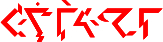
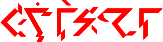
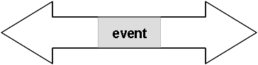
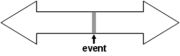
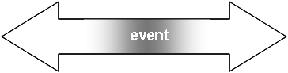
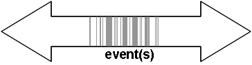
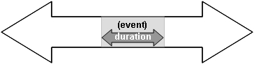
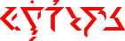

Dans ce chapitre sera analyser une catégorie de morphologie additionnelle: les cas. Comme les sept autres catégories analysés dans le chapitre précédent et non pas comme dans les autres langues, les cas s'appliquent à tous les formatifs véhicule, ie à la fois au nom et au verbe. pourtant le contexte syntaxique de chaque cas opère de manière suffisamment non similaire pour les noms et les verbes, ce qui pousse à faire une analyse séparée. Dans ce chapitre nous allons analyser la morphologie des cas au nom seul. l'usage des cas avec les verbes sera analysé dans la section Section
5.2.
Quiconque a étudié l'allemand le latin le russe grecque classique ou le sanskrit est familier avec le concept de cas. LEs cas réfèrent généralement à un schéma morphologique dans lequel le nom, par des mutations internes de ses phonèmes ou via des affixes, montre le “rôle” grammatical qu'il joue dans la phrase dans laquelle il apparaît. eg, dans la phrase française c'est moi qu'elle a vu, l'usage du mot ‘elle’ est opposé à ‘lui’ et ‘je’ à ‘moi’, ce qui distingue le sujet de la phrase (la personne voyant) de l'objet du verbe (la personne est en vue). Similairement, dans la phrase allemande Der Bruder des Knaben sah den Mann (= ‘le garçon du frère voit l'homme’), les mots ‘der’, des et den distinguent le sujet de la phrase ‘frère’ (nominatif) du possesseur ‘garçon’ (génitif) de l'objet ‘homme’ (accusatif).
Le concept de “cas” peut être grandement étendu des notions de sujet, objets et possesseurs. Dépendant d'un langage particulier, il peut y avoir des cas pour les noms qui spécifient la localisation ou la position d'un nom, si un nom accompagne un autre ou dérive d'un autre ou est la racine d'un autre. En général, les cas des noms en ce genre de langue s'appuie souvent sur des substitutions de ce qui, en français, est accompli par l'usage de propositions ou de phrases prépositionnelles. Le processus d'ajouter des articles ou de changer la structure phonétique d'un mot dans le but de montrer un nom dans un cas particulier est connu comme décliner un nom, et les diverses permutations d'un nom dans ces différents cas sont connus comme ses déclinaisons.
Il y a 96 cas en ithkuil, dont 72 cas principaux, et 24 cas de comparaison. Les cas de comparaison servent à dire pour des fonctions spécialisées associées avec une catégorie verbale appelé Niveau et sont discutés séparément dans la Section 6.2.4. Les 72 principaux cas sont discutés dans ce chapitre.
4.1
RÔLE SÉMANTIQUE VERSUS SLOT POSITIONNEL |
Dans la plupart des langues, les cas opère au niveau de la surface d'une langue pour signifier arbitrairement les relations grammaticales comme le sujet, direct, l'objet indirect. Un niveau plus profond de “rôle sémantique” est ignoré en terme de désignation morphologique. La notion de rôle sémantique peut être illustrée par l'ensemble de phrase suivante:
(1a) John ouvrit la porte avec la clé.
(1b) La clé ouvrit la porte.
(1c) Le vent ouvrit la porte.
(1d) La porte ouvrit. {s'ouvrit?}
Dans chacune de ses phrases, le cas est assigné au “slot”, id est, la position des noms relativement au verbe, sans rapport avec leur rôle sémantique. Ainsi les “sujets” de ces phrases sont, respectivement, John, la clé, le vent, et la porte. Il peut être vu que, sémantiquement parlant, ces quatre phrases sont liés de manière causale plus spécifiquement, la phrase (1b) résultent directement de la phrase (1a), et que la phrase en des résultats directement de soi embête soit ainsi. On peut voir que le cas du nom ‘clé’ dans la phrase (1a) est propositionnelles, tandis que la phrase 1B il est sujet. Encore une fois, la clé joue le même rôle sémantique dans les deux phrases : instrument physique par lequel l'acte d'ouvrir est accompli.Cela vaut aussi pour le nom ‘porte’, qui est marqué comme objet direct dans les trois premières phrases et comme sujet dans la quatrième., Son rôle sémantique ne change jamais pensé quatre phrases, il est, c'est le nom qui subit un changement de son état comme le résultat de l'acte d'ouvrir. Le nom ‘John’ dans la phrase (1a) marqué comme sujet, le même cas que clé dans (1b), que ‘vent’ dans (1c) et que ‘porte’ dans un (1d), id est, John agit comme l'initiateur conscient de l'acte d'ouvrir. Finalement, le nom ‘vent’ dans (1c), même s'il est marqué comme sujet, opère comme un autre rôle sémantique distinct des sujets des autres phrases. Il est une force aveugle et inanimé de la nature qui, tout en étant la cause sous-jacente de l'acte d'ouvrir, ne fait pas de choix conscient ou voulu pour initier une telle action.
La structure des cas dans les langages occidentales marque des slots positionnels (id est, des relations grammaticales) uniquement; et n'ont pas d'autres moyens d'indiquer un rôle sémantique, et donc les relations causales intuitives entre les éléments de phrases comme celle du dessus. En ithkuil, pourtant, le cas d'un nom est basé sur ce rôle sémantique sous-jacent, et pas sur sa position syntaxique dans la phrase par rapport au verbe. Ces rôles sémantiques reflètent un niveau plus fondamental ou primaire du langage sans rapport avec les cas de surface marquant les noms dans les autres langues. Ainsi en ithkuil, la déclinaison des noms reflète plus précisément la fonction sémantique sous-jacente qu'ils jouent dans les phrases. En conséquence, les notions de grammaire des langues occidentales comme “sujet” et “objet” ont un sens restreint et sont donc peu applicables en grammaire ithkuil.
Les rôles sémantiques suivants sont marques par les cas des noms en ithkuil. Ils correspondent grossièrement au “sujet” et “objet” des langues occidentales:
AGENT: L'animé, (et visuellement conscient et délibéré) initiateur d'un acte qu'il fait subir à un autre nom et qui provoque la conséquence d'un changement d'état de comportement, eg, ‘John’ dans la phrase (1a) ci-dessus.
FORCE: Un inanimé, auditif, cause d'un acte comme une force de la nature le vent dans la phrase (1c) ci-dessus
INSTRUMENT: Un nom qui fonctionne comme le moyen physique ou l'outil par lequel un acte de est initié, eg, ‘clé’ dans les phrases (1a) et (1b) ci-dessus.
PATIENT: Un nom qui subit un changement d'état de comportement comme le résultat d'un acte causé par lui-même ou par un autre nom, eg, ‘porte’ dans les quatre phrases ci-dessus.
Des rôles sémantiques additionnelles correspondant aux sujets et objets des langues occidentales existent en ithkuil comme cas de noms déclarés. Y sont inclus les rôles d'INITIATEUR, EXPÉRIMENTATEUR, STIMULUS, RECIPIENT, et CONTENU {"ENABLER, EXPERIENCER, STIMULUS, RECIPIENT, and CONTENT"}, et sont expliqués plus bas grâce aux présentes phrases comme illustrations.
(2a) Mary frappe les enfants.
(2b) Mary divertit les enfants.
(2c) Mary voit les enfants.
(2d) Mary raconte aux enfants une histoire.
(2e) Mary veut des enfants.
En examinant ces cinq phrases, on peut noter que le nom Mary est le slot sujet dans chacune d'elles et l'enfant l'objet directe (excepté dans la quatrième phrase), même si les rôles sémantiques pour ces deux noms sont entièrement différents. Dans la phrase (2a), on peut voir que Mary est un AGENT qui cause des blessures ou de la souffrance tangible à l'enfant, qui lui fonctionne évidemment dans le rôle de patient. Ainsi, la (2a) est identique à la phrase (1a) en termes des rôles dépeints par le sujet et l'objet direct.
Dans la phrase (2b) pourtant, Mary divertit les enfants., il y a une subtile distinction. On peut tout d'abord considérer Mary comme un agent qui initie le changement de l'enfant (ie, le fait qu'ils deviennent divertis). Mais, en fait, l'acte de divertir n'est pas un résultat (le plaisir prit par l'audience) qui est par la part faisant le divertissement. En fait, le résultat d'un acte de divertissement n'est pas déterminé par Mary, mais plutôt par l'enfant, basé sur le fait qu'ils “sentent” le sentiment de plaisir résultant de l'acte de Mary. Et donc, Mary est plus un patient ici, et non un agent, comme elle subit un changement dans son état ou son comportement (elle tente de divertir) ce qu'elle a choisi de faire elle-même pour initier et subir, comme l'acte a le potentiel de causer un changement chez l'enfant, le succès de cette motivation étant déterminé par l'enfant, et non Mary. Un tel rôle sémantique pour Mary est appelé INITIATEUR. Et comment l'enfant fait le choix de faire s'ils se divertissent ou non (ie, qu'est-ce qui est leur rôle sémantique?). Est-ce que l'enfant peut délibérément ou consciemment choisir de ressentir un sentiment de plaisir, ou ne sont-ils pas tous les deux des “patients” non-volontaires de leur propre réaction émotionnelle? En termes de cas grammaticaux, une expérience où l'enfant subit une expérience non-délibérée est appelée EXPÉRIMENTATEURS. En dehors de leurs réactions émotionnelles, de telles expériences involontaires incluent des perceptions sensorielles autonomes (ex, des éléments qui voient ou entendent car leurs yeux sont ouverts et pointés dans une direction particulière ou qui sont à portée du sont), et des réactions ou réponses corporelles autonomes comme les sensations proprioceptives (ex, tousser, renifler, transpirer, avoir chaud ou froid, sentir la douleur,etc).
La notion d'EXPÉRIMENTATEURS est aussi illustrée dans la phrase (2c) Mary voit les enfants., dans laquelle le verbe ‘voir’ dénote d'un expérience sensorielle automatique, et non d'une action délibérée. En d'autres termes, il est dans la nature du sens de la vue de fonctionner automatiquement peut importe si la personne est consciente et ses yeux sont ouverts. Le verbe ‘voir’ n'implique pas nécessairement une action consciente ou délibrée de “voir” (comme il est forcément impliqué par le verbe ‘regarder [quelque chose]’. Ainsi, l'“action” est automatique et pas initié; c'est, en fait, non une action, mais plutôt en état d'expérience dans lequel la personne qui est en train de voir subit. En d'autres termes, la personne voyant est actuellement une sorte de “patient”, comme elle est en train de subir l'expérience de (et la réaction physique et/ou émotionnel à) une vision particulière. De tels subissement des verbes de sensations, et autres états non-volontaires (ex, états ou réactions autonomes émotionnelles ou corporelles, comme renifler; des états physiques de sensations tels être chaud ou froid, etc.) sont catégorisés dans le rôle d'EXPÉRIMENTATEURS. Et quel est le rôle de l'enfant dans la phrase (2c)? `A la différence des trois premières, l'enant ne subit aucune action. Assurément, le processus d'“être vu” par Mary n'est pas en lui-même la cause d'un changement physique ou d'une réaction d'un quelconque genre chez l'entité regardé. L'enfant ne peut non plus être analysé comme “initiateur” de l'acte de vision, comme il est complétement ignorant que Mary est entrain de le voir. Il en résulte que le rôle sémantique des enfant est plus STIMULUS, un raison neutre et non-volontaire de l'état subi d'être par l'autre nom participant à la relation.
Dans la phrase (2d), Mary raconte aux enfants une histoire, Mary est un patient qui début l'action qu'elle même subit, le fait de raconter une histoire. Les enfants ne subissent pas une sensation émotionelle involontaire, ou une réaction physique ici, mais sont plutôt passifs et plus ou moins RÉCEPTEURS de l'information, dans le rôle d'“objet indirect” dans les langues occidentales. L'histoire, d'une autre façon, est simplement un référent abstrait qui ne participe pas à la relation, avec un rôle appelé CONTENU.
Le rôle de CONTENU s'applique également aux enfants de la phrase (2e) Mary veut des enfants, où ils fonctionnent comme un “objet” du désir de Mary. Comme ni action tangible est effectué, ni les enfants ne subissent un quelconque changement d'état, ni ont besoin d'être conscients du désir de Mary; ils sont, comme l'histoire de la phrase (2d), simplement des éléments non-participants. Comme le rôle de Mary dans la (2e), l'état émotionel du désir, étant non-volontaire, auto-activé, et subjectivement interne; crée une situation similaire à une perception/réponse sensorielle automatique ou autonome du corps; le rôle de Mary est ainsi EXPÉRIMENTATEUR.
4.1.3 Structures des arguments
En plus de cas basés sur les rôles sémantiques, l'ithkuil diffère d'un autre aspect important des langues naturelles en ce qu'il n'y a pas d'argument par défaut dans la structure de ses formatifs verbales. Ceci est expliqué ci-dessous.
Les verbes individuels des langues naturelles ont chacun une structure d'arguments implicite, ie, un motif de comment les noms (ie, les “arguments”) intéragissent avec un verbe particulier, et quel rôle formel (d'un point de vue morpho-sémantique) que chacun de ces noms ont en relation avec le verbe. Par exemple, le verbe “frapper” en Anglais implique l'existence d'un agent (ie, quelqu'un qui est à l'origine du coup) et un patient (ie quelqu'un qui subit le coup et ses effets), comme dans “Il frappa son chien”. Une structure d'argument différente est illustrée avec le verbe “donner”, qui implique un agent à l'origine du don, et un patient subissant la reception du don, et un nom fonctionnant en tant que contenu (au sens de rôle sémantique), ie, l'objet donné/reçu.
La grammaire des langues naturelles spécifie ce que chaque verbe nécessite comme arguments, et ce qui sont optionels. Ceci est illustré, eg, dans les phrases françaises suivantes (les phrases non-correctes grammaticalement sont précédées d'une astérisque):
3a) Sam donna un livre à la fille.
3b) Sam donna un livre.
3c) Sam donna.
3d) * Sam donna à la fille. (sens voulu: Sam donna quelque chose à la fille)
3e) * Donna à la fille un livre. (sens voulu: Un livre a été donné à la fille par quelqu'un ou Quelqu'un donna un livre à la fille.)
3f) * Donna à la fille. (sens voulu: Quelque chose a été donné à la fille, ou Quelqu'un a donné quelque chose à la fille.)
3g) * Donna un livre. (sens voulu: Quelqu'un donne un livre.)
3h) * Donna. (sens voulu: Quelqu'un fit un présent, ou Quelqu'un donna quelque chose, ou L'action de donner a eu lieu.)
Dans la phrase (3a), les tois arguments du verbe “donner” sont exprimmés, tandis que dans la phrase (3b), le patient/récepteur a été éliminité. La phrase (3c) élimine à la fois les arguments patient/récepteur et CONTENU. La phrase (3d), elle, quand l'on essaie d'éléminier l'argument CONTENU du livre tout en préservant le patient/récepteur, la phrase requiert la restructuration syntaxique en Sam donne [quelque chose] à la fillepour maintenir une cohérence grammaticale (l'astérix * au début de la phrase indique qu'elle est non correcte grammaticalement parlant). De même, les phrases (3e), (3f), (3g) et (3h) sont incorrectes quand on essaie d'enlever 'lagent, aussi bien que les deux arguments, séparément ou en même temps, ce qui requiert de faire des paraphrases pour continuer à avoir le même sens grammatical.
On compare maintenant le groupe précédent de phrases contenant le verbe ‘donner’ avec les phrases ci-dessous contenant le verbe ‘briser’:
4a) Tim brise la fenêtre avec un marteau.
4b) Tim brise la fenêtre.
4c) Le marteau brise la fenêtre.
4d) La fenêtre brise.
4e) *Le marteau brise. (sens voulu: le marteau brise quelque chose.)
4f) *Tim brise. (sens voulu: Tim brise quelque chose, ou Tim a fait que quelque chose se brise.)
Noter comment la phrase (3c) ci-dessus, Sam donne, est grammaticalement correcte, mais la structure similaire de la phrase (4f) Tim brise non. Inversement, noter en comparant les phrases (4a) et (4d) que le patient fenêtre est grammatical pour les deux slots objet et sujet, mais, similairement, placer le patient fillede la phrase (4a) en emplacement sujet donne une phrase non-grammaticale*The girl donna (sens voulu: `A la fille a été donné quelque chose ou Quelqu'un donna quelque chose à la fille.)
D'autres exemples de contraintes sur la structure des arguments en français sont illustrés par les suivantes:
Bill coupa le gâteau avec un couteaupeut être raccourci en Bill coupa le gâteau, mais la phrase syntaxtiquement identique Elle posa le livre sur l'étagère ne peut être raccourcie en *Elle posa le livre. {problem: correct in french. Another example to find?}
{problème, heal and cure ont pour traduction guérir, ce qui fausse l'exemple. Exemples anglais gardés en attente de retravail}Treatment healed my wounds peut détruire son agent pour donner My wounds healed, mais la phrase similaire Treatment cured my wounds ne permet pas de suppression de l'agent pour donner *My wounds cured.
Comme il a pu être vu, des langues comme le français sont très hasardeuses dans les contraintes (variées) sur les structures des arguments appliquées aux verbes individuels. Parfois, il est possible de de supprimer ces arguments mais d'en d'autres, faire ceci a pour résultat une phrase non-grammaticale, même si des paraphrases sémantiquement équivalentes existent. L'ithkuil n'a pas de telles contraintes dans sa structure des arguments. Aussi longtemps que la phrase fait sens sémantiquement et ses relations entre les arguments explicites ou implicites et leur verbe peuvent être déterminées ou inférées, alors la phrase ithkuil sera grammaticalement acceptée. TCeci est possible car, en ithkuil, les noms sont marqués par cas sur des bases sémantiques, aussi bien que les verbes sont marqués par Fonction, une catégorie explorée dans la Section 5.1.
4.2 MARQUEURS MORPHO-PHONOLOGIQUES POUR CAS |
Les cas sont indiqués de différentes manières en ithkuil, dépendant de s'ils sont manifestés en conjonction d'un formtif ou d'un auxiliaire de référence personnel (expliqué dans la Section 8.1). Pour les formatifs, les 72 cas primaires sont indiqués par l'une des 72 formes de l'affixe vocalique Vc.
I |
II |
III |
IV |
V |
VI |
VII |
VIII |
IX |
X |
XI |
XII |
XIII |
XIV |
XV |
(((Cv) |
VL) |
Cg/Cs) |
Vr |
(Cx/Cv |
Vp/VL) |
Cr |
Vc |
Ci +Vi |
Ca |
VxC |
(Vf |
(’Cb)) |
[ton] |
[accent] |
Phase + |
Valence |
Validation OU Aspect (+ Humeur) |
Motif + Radical + Fonction |
Racine Incorp. OU Phase + Sanction (+ Illocution) |
Motif + Radical + Designation de la Racine Incorp. OU Valence |
Racine |
Cas |
Illocution + Humeur |
Essence + Extension + Perspective + Configuration + Affiliation |
Deriv. Suffixe |
Context + Format |
Biais |
Version |
Designa- tion |
Les valeurs particulières du suffixe Vc sont données dans la Table 7 ci-dessous. Les noms et fonctions de chaque cas sont expliqués ci-dessous, commençant à de la Section 4.3.
Table 7: Valeurs de Vc par Cas (pour les Cas de 1 à 72. Pour les valeurs de Vc pour les Cas 73 - 96 voir Section 6.2.4)
1 OBL |
a |
13 PRP |
î / û |
25 PUR |
e’ |
37 CMM |
au |
49 AVR |
eu’ |
61 ALP* |
oi’V |
2 IND |
u |
14 GEN |
ê |
26 CSD |
o’ |
38 COM |
eu |
50 CMP |
ou’ |
62 INP* |
ëi’V |
3 ABS |
e |
15 ATT |
ô |
27 ESS |
ea |
39 CNJ |
iu |
51 SML* |
a’V |
63 EPS* |
au’V |
4 ERG |
o |
16 PDC |
ëi |
28 ASI |
eo |
40 UTL |
ou |
52 ASS* |
e’V |
64 PLM* |
eu’V |
5 EFF |
ö |
17 ITP |
öi |
29 FUN |
eö |
41 ABE |
ëu |
53 CNR* |
i’V |
65 LIM* |
iu’V |
6 AFF |
i |
18 OGN |
ae |
30 TFM |
oa |
42 CVS |
öu |
54 ACS* |
o’V |
66 LOC* |
â’V |
7 DAT |
ü / a’e |
19 PAR |
ia / ua |
31 REF |
oe |
43 COR |
ai’ |
55 DFF* |
u’V |
67 ORI* |
ê’V |
8 INS |
ai |
20 CRS |
ie / ue |
32 CLA |
öa |
44 DEP |
ui’ |
56 PER * |
ö’V |
68 PSV* |
ô’V |
9 ACT |
ei |
21 CPS |
io / uo |
33 CNV |
öe |
45 PVS |
ei’ |
57 PRO* |
ü’/ ëu’V |
69 ALL* |
î’V/û’V |
10 DER |
ui |
22 PRD |
iö / uö |
34 IDP |
üa / i’ |
46 PTL |
oi’ |
58 PCV* |
ai’V |
70 ABL* |
ëu’V |
11 SIT |
oi |
23 MED |
a’ |
35 BEN |
üe / ö’ |
47 CON |
au’ |
59 PCR* |
ei’V |
71 NAV* |
ou’V |
12 POS |
â |
24 APL |
u’ |
36 TSP |
üo / î’ / û’ |
48 EXC |
iu’ |
60 ELP* |
ui’V |
72 VOC | ë |
* Cas 51 – 71: Le V représente une voyelle dont la valeur par défaut est -a-. Pourtant, si l'affixe Vr formatif est enlevé de l'Emplacement IV, alors optionellement, V prend la valeur de l'affixe Vr et Vr est enlevé de l'Emplacement IV, eg, opral se décline dans le cas SML devient soit opra’al, soit pra’ol.
Pour
les auxiliaires de référence personnel, qui correspondent grossièrement aux pronoms personnels dans les autres langues, les cas marqués sont dépendants de plusieurs facteurs, comme expliqués dans la Section
8.1.
On est maintenant en position d'examiner les différents cas du nom en détails. On commencera par le groupe de cas correspondant aux “sujets” et “objets” dans les langues occidentales.
4.3 4.3 LES CAS TRANSRELATIFS |
Les cas transrelatifs réfèrent à onze cas utilisés pour identifier les noms fonctionnant comme participant à un verbe, ce qui serait appelé dans les grammaires occidentales “sujets” et “objets”, et sont plus souvent marqués comme le nominatif, l'accusatif, ou le datif. Ce sont ces cas qui correspondent plus ou moins aux rôles sémantiques identifiés dans la Sec. 4.1 plus haut. Les onze cas transrelatifs sont l'OBLIQUE, l'ABSOLUTIF, le DATIF, l'ERGATIF, l'EFFECTUATIF, l'INDICUTIF, l'AFFECTIF, l'INSTRUMENTAL, l'ACTIVATIF, le DERIVATIF, et le SITUATIF. Ce qui suit sont des explications des fonctions et usages de chacun de ces cas.
Des exemples actuels de ces cas en ithkuil sont donnés dans la Section 4.3.12.
| 4.3.1 | OBL |
Le cas Oblique |
Le cas OBLIQUE est marqué par par la valeur -a- de Vc. Comme décrit plus haut dans la section 4.1.22, l'OBLIQUE identifie le rôle sémantique de CONTENT, qu'il s'agisse de quelque chose de donné comme RECIPIENT, ou un contenu abstrait non-causal d'un état expérimental, eg, une mémoire rapellée, quelque chose désirée, quelque chose craint. Il sera ainsi utilisé pour traduire des phrases comme Sam me donna un livre, L'enfant aime les céréales . C'est également le cas associé avec l'identification existentielle [[l'attribut du sujet]]ce qui en français serait le sujet du verbe ‘être’, quand cela réfère à une identité intrinsèque ou une description statique d'un nom, comme dans la phrase française Ce garçon est aveugle ou La maison a été construite en bois. L'OBLIQUE, étant sémantiquement le cas le plus neutre, est également la forme de citation d'un nom (ie, la forme avec laquelle un nom est listé dans un dictionnaire).
| 4.3.2 | IND |
Le cas Inductif |
Le cas INDUCTIF est marqué par par la valeur -u- de Vc. The INDUCIVE case is marked by the Vc value -u-. L'INDUCTIF identifie un nom qui subit une action auto-initiée, ie, le nom est le PATIENT d'une action agentielle dans laquelle l'AGENT et le PATIENT sont les mêmes. Noter que n'implique pas nécessairesment une action réflexive (ie, faire quelque chose à soi-même). Il devrait être utilisé dans des phrases comme Le garçon sauta, Il chanta, Le chien hurla toute la nuit, or Elle dança sur la musique, dans laquelle les parties initiant et réalisant l'action sont unes et la même.
| 4.3.3 | ABS |
Le cas Absolutif |
Le cas ABSOLUTIF est marqué par par la valeur -e- de Vc. Comme décrit dans la Section 4.1.1 plus haut, l'ABSOLUTIF identifie le rôle sémantique de PATIENT d'un action agentiel, où l'initiateur-agent est différent du patient qui subit le résultat de l'action. Noter que dans les phrases avec des sujets patients, l'agent ou l'instrument d'une agence nécessite de ne pas être ouvertement exprimé. Des exemples de phrases françaises traduisibles avec l'ABSOLUTIF pourraient être Le garçon frappa la fille, Elle le força à le faire, L'oiseau tomba du ciel, Le prisonnier mourrut pendant un affrontement au pistolet.
| 4.3.4 | ERG |
Le cas Ergatif |
Le cas ERGATIF est marqué par par la valeur -o- de Vc. L'ERGATIF identifie le rôle sémantique de l'AGENT, ie, le nom qui initie une action tangible subit par un autre membre (le PATIENT), comme décrit dans la Section 4.1.1. Noter que les phrases avec un agent ERGATIF ne nécessite pas ouvertement l'expression du nom patient. Des exemples de phrases françaises traduisibles avec l'ERGATIF serait Le garçon frappa la fille, Elle le força à le faire, Ce meutrier tue pour s'amuser.
| 4.3.5 | EFF |
Le cas Effectuatif |
Le cas EFFECTUATIF est marqué par par la valeur -ö- de Vc. The EFFECTUATIVE case is marked by the Vc value -ö-. TL'EFFECTUATIF identifie le nom agissant avec le rôle sémantique de l'initiateur, comme décrit dans la Section 4.1.2 ci-dessus. C'est le nom qui initie une chaîne d'évènements causals, qui résulte finalement en un évènement final. Un exemple serait retirer le bouchon d'une baignoire pleine, ce qui aurait pour effet de la vider. Ce cas doit être prudemment distingué de l'ERGATIF. Des noms marqués avec ce dernier impliquent l'action subit par le patient est la même que l'action initié par l'agent, alors que l'EFFECTUATIF implique une chaîne ou série d'actions de causes à effet. eg, la traduction en ithkuil de la phrase Le clown vida le sang du tube, le clown peut être comme un AGENT grâce à l'ERGATIF, ou comme INITIATEUR au moyen de l'EFFECTUATIF. Le précédant exemple signifiera que le clown versa le sang lui-même, tandis que le laissa l'égouter (ie, en tirant le bouchon). De tels distinctions de cas éliminent besoin d'avoir en ithkuil des verbes séparés pour ‘drainer’, ‘verser’, ou ‘vider’. Le verbe ithkuil utilisé pour pour traduire la phrase signifiera simplement ‘enlever’.
Noter que le cas EFFECTUATIF est couremment utilisé avec l'affixe ENB -ls pour montrer le degrée ou la nature de la cause initiale. Avec ce suffixe, les phrases peuvent être produites en signifiant si l'activation est faite en donner un consentement ou une permission, par la persuasion, par une indirecte subtile et indirect, par la suppression d'un obstacle, ou par inaction.
| 4.3.6 | AFF |
Le cas AFFECTIF |
Le cas AFFECTIF est marqué par par la valeur -i- de Vc. L'AFFECTIF dénote un nom dont le rôle sémantique est celui d'EXPÉRIMENTATEUR, comme précédemment décrit dans la Section 4.1.2, le nom qui subit un état expérimental non-causal, non-initié et non-volontaire, qu'il soit autonome et inter par nature ou le résultat d'un stimulus externe. Des exemples de tels états serait des expériences de sensations automatiques; des réactions corporelles autonomes comme bailler, renifler, tousser, cligner, se gratter, se sentir endormi, souffrir, se sentir malade, avoir froid ou chaud; des réactions automatiques dues à un stimuli externe comme recevoir un choc, tressaillir, se baisser, élever le bras pour éviter un danger soudain; et tout aussi bien des états émotionnels comme l'amour, la haine, la peur, la rage, la surprise, la joie, la mélancolie, la timidité, le regret, l'anxiété, etc.
Des exemples de phrases utiliant l'AFFECTIF serait Le bébé est en train de touserLa lumière la surpris, Mortimer aime ses victuailles, Oncle Davey dort jusqu'à midi, Mon dos me gratte.
Noter que si l'état expérimental est délibérément porté par le nom le subissant, l'INDUCTIF sera utilisé, à partir du moment où le nom est délibérément initaeur d'une action induisant un état expérimental. eg, on peut comparer Les enfants sourire avec joie (utilisé avec l'AFFECTIF) avec Les enfants sourit au bon moment (utilisé avec l'INDUCTIF).
| 4.3.7 | DAT |
Le cas Datif |
Le cas DATIF est marqué par la valeur -ü- de Vc, si le radical de Cr finit par un -w; ou par un -ae’-, si le radical de Cr finit par un -y. Le DATIF a deux fonction en ithkuil. De façon similaire aux langues occidentales, il marque l'objet indirect des verbes comme donner ou raconeter, ie, le rôle sémantique de RECIPIENT d'un nom transférré par un acte de donation, prêt, ou tout autre transfert de possession, ou le destinataire a qui quelque chose est dit, raconté, etc, comme décrit dans la Section 4.1.2 plus haut. De plus, comme certaines langues occidentales (eg, Russian), l'ithkuil utilise une construction au datif au lieu du verbe ‘avoir’ en référence à la position ou l'attribution. Il devra être ainsi utilisé pour traduire des phrases comme Nous te un présent, Jason prêta un dollar à sa sœur, S'il vous plaît, accordez-moi un souhait, Les étudiants ont trois livres, Ces montagnes ont une composante mystérieuse..
| 4.3.8 | INS |
Le cas Instrumental |
Le cas INSTRUMENTA est marqué par par la valeur -ai- de Vc. Comme décrit précédemment dans la Section 4.1.1, l'INSTRUMENTAL dénote un nom qui fonctionne comme un instrument ou moyen utilisé par un AGENT pour accomplir une action ou modifier/créer un état {"bringin about a state"}. Il est habituellement utilisé à la place du mot français ‘avec’. Des exemples de l'usage de l'instrumental serait Elle le tua avec un couteau, L'homme trébucha sur mon pied, Le mot de passe l'amena dedans.. L'INSTRUMENTAL est également utilisé pour marqué la traduction d'un “sujet” inanimé quand sa fonction logique est d'être l'instrument d'un agent non déclaré, eg, comparer J'ai pressé le bouton avec mon doigt avec Mon doigt pressa le boutton, ces deux phrases étant identique en ithkuil à l'exception de la dernière qui omettra l'agent de la première personne, donc Mon.
Noter que l'instrmental ne traduit pas ‘avec’ dans son sens ‘en même temps que’ ou ‘accompagné par’ (voir le COMITATIF dans la Sec. 4.5.20) comme dans Elle arriva avec son père. Ni avec la consommation de ressources ou de matériaux dans la réalisation d'un acte. eg, dans la phrase Il cuisina avec de tomates (voir le cas COMPOSITIF dans la Sec. 4.5.3), ce n'est pas les tomates qui cuisinent la nourriture, ainsi l'INSTRUMENTAL ne doit pas être utilisé, tandis que dans Il alimenta le feu avec du bois c'est le bois qui alimente le feu, requérant ainsi l'INSTRUMENTAL.
| 4.3.9 | ACT |
Le cas Activatif |
Le cas ACTIVATIF est marqué par par la valeur -ei- de Vc. L'ACTIVATIF identifie un nom engagé ou sujet à un état mental ou métaphysique qui, comme conséquence, crée une sitation hypothétique et non réalisé qui peut potentiellement être concrétiser par d'autres actions plus poussées. De tels situations irréalisées peuvent être illustrées par la phrase Franck doit aller à Chicago, alors qu'il n'y a actuellement pas de voyage pour Chicago qui est en cours, et peut être ne peut être fait. Similairement Mère a besoin de rester., l'action de rester n'a pas encore eu lieu et n'aura peut être pas lieu. ans les deux phrases, l'évènement qui pourra “remplir” l'état décrit rest irréalisé et hypothétique, au moins de la persepctive du locuteur De façon similaire, des évènements ou des états hypothétique peuvent être trouvés dans les phrases Les étudiants veulent que tu chantes, Tout le monde excepté toi rigole, ou Joe va demander que je reste.. Noter que plusieurs de ces constructions utilisent en français ou en anglais des verbes “modaux” comme vouloir, nécessiter, pouvoir, devoir,, etc.
Noter que les sujets de ces phrases anglaises (Frank, Mère, les étudiants, tout le monde, Joe) fonctionnent ni comme AGENTS ni PATIENTS, comme les verbes modaux avec lesquels ils sont sujets ne les identifient pas encore comme des évènements actualisés, seulement des états de possibilités non-réalisées. Les sujets sont essentiellements des expérimentateurs subissant un état mental ou métaphysique de volition, besoin, obligation, d'attente, d'espérance, de souhait, de capacité à, etc. Pourtant, de tels expérimentateurs doivent être de ce qui serait des expérimentateurs “dans” la situation hypothétique. eg, dans la phrase Sam veut que Shirley l'aime, il peut y avoir une ambiguïté si Sam et Shirley sont tous les deux marqués comme EXPERIMENTATEURS en utilisant l'AFFECTIF. Par conséquent, l'ithkuil utilise l'ACTIVATIF pour marquer le sujet dont l'état mental ou métaphysique crée une situation hypothétique concurrente et irréalisée. Tous les sujets dans les phrases d'exemples du précédent paragraphe (ie, Frank, Mère, les étudiants, tout le monde, Joe)devraient être ainsi marqués. Dans la Section 6.1 , on verra comment l'ACTIVATIF est utilisé en conjonction de sa catégorie morphologique pour les verbes classés comme Modalité pour créer de tels états ou situations hypothétiques.
| 4.3.10 | DER |
Le cas Dérivatif |
Le cas DERIVATIF est marqué par par la valeur -ui- de Vc. The DERIVATIVE case is marked by the Vc value -ui-. Le DERIVATIF a deux usages en ithkuil. Premièrement, il identifie une FORCE inanimé de la nature (comme décrit dans la Sec. 4.1.1) ou situation causale abstraite qui fait subir à un nom PATIENT la cause d'une action, comme dans Le vent souffla la porte, or La célébrité menaça sa liberté. L'usage du DERIVATIF à la place de l'ERGATIF ou de l'EFFECTUATIF dénote que de telles forces agentielles inanimées ou abstraites introduisent des situations ne pouvant pas être consciemment ou volitionnellement résultantes d'actions, mais sont plus simplement des causes initiants des circonstances. Ainsi, le résultat d'un acte, d'un évènement, ou d'un état est vu comme étant dérivé d'une force ou d'une situation, à l'opposée d'être d'être pleinement et consciemment causé. Avec cette fonction, un nom avec le DERIVATIF peut être souvent traduis en utilisant des phrases comme ‘du à, en raison de, en acompte de, à cause de/grâce à, comme le résultat de’. Les noms avec le DERIVATIF peuvent également appraître en consturction appositives (ie, dans une conjonction nom-à-nom) où le nom au DERIVATIF dénote une cause ou raison abstraite de l'autre nom, eg, Le danger de la célébrité, le chagrin d'amour, la chanson du vent.
La seconde fonction du DERIVATIF est d'identifier STIMULUS non-agentiel, inconscient et non-délibéré d'un état mental, émotionnel, ou une expérience sensorielle autonome, comme dans Le café sent bon, Je la vois aujourd'hui, Elle déteste ce garçon, Victor toussa à cause du gaz, Nous avons ri de sa blague, Cette chansonm'a fait pleurer. La grammaire l'ithkuil voit le stimulus d'un état expérimental comme ayant un rôle similaire à une cause abstraite circonstancielle/situationnelle (comme dans les exemples ci-dessus); cela explique pourquoi le DERIVATIF sert à indiquer ces deux fonctions.
| 4.3.11 | SIT |
Le cas Situatif |
Le cas SITUATIF est marqué par la valeur -oi- de Vc. Le situatif identifie un nom comme le contexte ou l'arrière plan d'une clause. Il est similaire au DERIVATIF immédiatement ci-dessus, à l'exception qu'il n'implique pas une relation causale entre l'arrière plan et l'acte, la condition, ou l'évènement qui se produit. Il est traduisible en français par des circumlocutions variées, comme montré dans les exemples suivants:
`A cause de la guerre, notre planète ne sera jamais capable de rejoindre la Fédération.
`A cause de la présence de ces clowns, nous devons accepter la corruptions de nos enfants.
En utilisant mon plan, nous allons défaire nos amis.
Les exemples suivants montre comment l'usage des cas transrelatifs aux noms (ie les arguments du verbe) permettent des modifications variées de signification, sans regard pour la structure des arguments. Comme on peut le voir, les traductions françaises de plusieurs de ces phrases requièrent souvent des changements de l'ordre mot, des substitutions, et parfois même des paraphrases, tout cela pour s'accommoder des contraintes sur la structures des arguments du français
Racines utilisées: -zb- Motif informel 1, Radical 1 ‘anger; be angry/feel anger’ -kš- formel Motif 1, Radical 2 ‘clown’STA = STATIF function DAT = DATIF
DYN = DYNAMIQUE function IND = INDUCIF
AFF = AFFECTIF case GEN = GENITIF case
SIT = SITUATIF case ABS = ABSOLUTIF
DER = DERIVATIF case OBL = OBLIQUE
ERG = ERGATIF case LOC = LOCATIF case
‘être/se sentir en colère’ |
‘Je/moi’ |
‘clown’ |
SIGNIFICATION |
Azbal |
ti |
ekšóil. |
ÉCOUTER |
Azbal |
ti |
ekšúil. |
‘Le clown m'a mit (involontairement) en colère.’ / ‘Je suis en colère car le clown a fait quelque chose qui m'a mit en colère. |
Azbal |
ti |
ekšól. |
‘Le clown m'a mit (délibérément) en colère.’ |
Azbal |
ti |
èkšöl. |
‘Ce que le clown a (délibérément) commencé m'a mit en colère.’ |
Azbal |
ti |
èkšül. |
‘Mon état de colère est directement dirigé vers le clown (i.e., e clown réagit à ma colère).’ |
Azbal |
tü |
ekšíl. |
‘Je sens que la clown est en colère contre moi.’ |
Azbal |
tö |
ekšíl. |
‘Ce que j'ai (délibérément) commencé à mis le clown en colère.’ |
Azbal |
to |
ekšíl. |
‘J'ai (délibérément) énervé le clown.’ |
Azbal |
tui |
ekšíl. |
‘J'ai énervé le clown par inadvertance.’ |
Azbal |
toi |
ekšíl. |
‘Ma présence {"being here"} énerve le clown.’ |
Azbal |
tu |
ekšóil. |
‘Je m'énerve à cause de la présence du clown.’ |
Azbal |
tu. |
-- |
‘Je m'énerve (délibérément) moi-même.’ |
Azbal |
tü. |
-- |
‘Quelqu'un se comporte avec colère envers moi.’ |
Azbal |
tö. |
-- |
‘J'ai (délibérément) commencé quelque chose qui a mis quelqu'un en colère.’ |
Azbal |
to. |
-- |
‘J'énverve (délibérément) quelqu'un.’ |
Azbal |
tui. |
-- |
‘J'énverve (par inadvertance) quelqu'un.’ / ‘Ce que j'ai fait énerve quelqu'un.’ |
Azbal |
toi. |
-- |
‘Ma présence énerve quelqu'un/fait que quelqu'un est énervé.’ |
Azbal |
ti. |
-- |
‘Je suis énervé.’ / ‘Je me sens énervé.’ |
Azbal |
-- |
ekšúl. |
‘Le clown s'énerva lui-même (délibérément).’ |
Azbal |
-- |
èkšül. |
‘Quelqu'un se compotre de façon énervé envers le clown.’ |
Azbal |
-- |
èkšöl. |
‘Le clown a commencé (délibérément) à faire quelque chose qui énerva quelqu'un.’ |
Azbal |
-- |
ekšól. |
‘Le clown énerva (délibérément) quelqu'un.’ |
Azbal |
-- |
ekšúil. |
‘Le clown énerva quelqu'un par inadvertance.’ / ‘Ce qu'a fait le clown a énervé quelqu'un.’ |
Azbal |
-- |
ekšóil. |
‘(La présence de) le clown énerve quelqu'un..’ |
Azbal |
-- |
ekšíl. |
‘TLe clown est énervé.’ / ‘Le clown se sent énervé’. |
Azbal |
-- |
-- |
‘Il y a une sensation de colère.’ / ‘Il existe de la colère.’ |
Les mêmes phrases du dessus avec la Fonction DYNAMIQUE ont plus le sens d'une action que d'un état, i.e., le comportement énervé ou la manifestation physique d'une colère que la sensation interne de colère.
Izbal |
ti |
ekšóil. |
|
Izbal |
ti |
ekšúil. |
‘Ma démonstration de colère est dû au clown (le clown étant nécessairement pas au courant de cela).’ |
Izbal |
ti |
èkšül. |
‘Ma démonstration de colère affecta/intimida le clown.’ |
Plus d’exemples de schémas d’utilisation des cas transrelatifs:
-k’- Motif formel 3, Radical 2 ‘brûler’ -ph- Motif informel 1, Radical 1 ‘arbre’
brûler |
1m |
arbre |
SIGNIFICATION |
Iek’ás |
to |
phel. |
ÉCOUTER |
Êk’ás |
-- |
phel. |
‘L'arbre brûle.’ |
Iek’ás |
-- |
phul. |
‘L’arbre brûle lui-même.’ / ‘L’arbre fait que lui-même brûle.’ |
Iek’ás |
to. |
-- |
‘Je fait brûler quelque chose.’ / ‘Je brûle.’ [sens: Je suis la cause de l’embrasement de quelque chose et de sa combustion] |
Iek’ás |
tö. |
-- |
‘J’ai fait brûlé quelque chose (à travers une chaîne d'évènements).’ / ‘Je brûle.’ [sens: Je cause une chaîne d’évènements qui amènent à ce que quelque chose brûle] |
Iek’ás |
te. |
-- |
‘Je brûle/suis en train de brûler.’ / ‘Quelque chose est en train de me brûler.’ |
Iek’ás |
tu. |
-- |
‘Je me brûle.’ / ‘Je fais que moi-même brûle.’ |
Iek’ás |
tö |
phel. |
‘Je suis la cause (à travers une chaîne d’événements) que l’arbre brûle.’ |
Iek’ás. |
-- |
-- |
‘Quelque chose fait que quelque chose d’autre brûle.’ / ‘Quelque chose brûle quelque chose.’ |
Êk’ás. |
-- |
-- |
‘Quelque chose brûle.’ / ‘La combustion de quelque chose est en train de se produire.’ |
D’autres motifs sont possibles. Par exemple, le tableau suivant montrent des motifs qui peuvent être utilisés sur des variations du français ‘J’ai cogné ma jambe contre un rocher’, ou ‘Je me suis cogné la jambe contre un rocher’, ou ‘Un rocher m’a cogné contre la jambe.’
-č- Motif informel 1, Radical 1 ‘contact physique’ + FRC1/7 --> čalosk ‘coup’
-pr- Motif informel 2, Radical 1 ‘jambe (en tant que partie physique du corps)’
-kt- Motif formel 1, Radical 1 ‘(un morceau de) rocher’
tê = ‘Je’ au cas génitif, référant au possesseur de la jambe; on peut combiner avec le préfixe ê- avec plusieurs formes de ‘Je’ suivant les différents cas transrelatifs comme to, tu, te, etc. pour obtenir des formes telles êto, êtu, êti.
hit/strike |
Je |
ma jambe |
rocher |
SENS |
Ičalosk |
êto |
oprel |
aktáil |
ÉCOUTER |
Ičalosk |
êtu |
opral |
aktáil |
Dans ce motif, la jambe n’est pas vue comme étant un patient séparé de moi-même vu comme un agent. Plutôt, je suis à la fois agent et patient (ie, je suis initiateur de l’action contre moi-même), et le rôle de la jambe est dé-emphasée en étant simplement un référent pour l’acte de frapper, ie, c’est moi qui reçoit le coup, et pas la jambe; la jambe est simplement la part de moi qui le pris. Par conséquent, la traduction la plus proche serait ‘’ai (intentionnellement) frapper moi-même contre un rocher sur la jambe’, en utilisant la construction locative “sur la jambe” non présente dans la phrase ithkuil. Aussi peu naturel {“stilted”} une traduction plus précise serait ‘J’ai (intentionnellement) “jambe-frappé” moi-même contre un rocher.’ |
Ičalosk |
ête |
opral |
aktáil |
Ces phrases un agent implicit, exacerbant moi-même comme le patient/la victime, alors que, comme dans la phrase directement au-dessus, la jambe est réduite à simplement un référent pour le coup, son statut comme un patient et comme le site du coup est supprimé. L’unique façon de montré cette suppression d’agent en anglais est d’utilisé une construction pseudo-passive en utilisant le verbe ‘obtenir’: ‘J’ai obtenu/me suis fait (intentionnellement) “jambe-frappé” contre un rocher.’ |
Ičalosk |
ête |
prâ’ol |
aktáil |
Cette phrae est comme celle immédiatement au-dessus excepté que la jambe est le lieu/location de la frappe. Traduction: ‘Je suis/obtiens (intentionnellement) un coup sur la jambe avec un rocher.’ |
Ičalosk |
êtu |
prâ’ol |
aktáil |
Accentue que je suis à la fois agent et patient, et que la jambe est l'emplacement/endroit du coup. Traduction ‘Je me suis (intentionellement) frappé moi-même la jambe avec un rocher.’ |
Ičalosk |
êtu |
opral |
aktáil |
Accentue que je suis à la fois agent et patient, mais que la jambe est réduit à simplement le référent du coup. Ceci est impossible à traduire en français ou anglais avec précision à l'exception des phrases artificielles ‘J'ai “jambe-frappé” moi-même contre un rocher.’ ou ‘J'ai (intentionellement) fait que ma jambe se cogna contre un rocher.’ |
Ičalosk |
êti |
prâ’ol |
aktáil |
Supprime l'agent de l'action, et accentue moi-même comme une victime accidentelle/non-volontaire du coup, avec ma jambe comme l'emplacement du coup. Traductions: ‘Je me suis (intentionellement) cogné la jambe contre un rocher.’ |
Ičalosk |
êti |
opral |
aktáil |
Comme l'exemple immédiatement ci-dessus, excepté que le rôle de la jambe est réduit à simplement un référent du verbe. Traduction: ‘Je me suis “jambe-frappé” (accidentellement) avec un rocher.’ |
Ičalosk |
to |
— |
aktáil |
Traduction: ‘J'ai (intentionnellement) frappé quelque chose avec un rocher.’ / ‘J'ai (intentionellement) effectué un coup avec un rocher.’ |
Ičalosk |
tu |
— |
aktáil |
Traduction: ‘Je me suis (intentionnellement) frappé moi-même avec un rocher.’ |
Ičalosk |
te |
— |
aktáil |
Traduction: ‘Je me fait/Je suis (intentionnellement) frappé avec un rocher.’ |
Ičalosk |
ti |
— |
aktáil |
Traduction: ‘Je me fait/Je suis (accidentellement) frappé avec un rocher.’ |
Ičalosk |
— |
tê opril |
aktáil |
Ici, la distinction entre moi-même et la jambe est supprimée, la jambe est donc vue comme une victime accidentelle/non-volontaire, pas moi ‘Ma jambe est/se fait frappée (accidentellement) par un rocher.’ |
Ičalosk |
— |
tê oprel |
aktáil |
Traduction: ‘Ma jambe est/se fait (intentionnellement) frappé avec un rocher.’ |
Ičalosk |
— |
tê opral |
aktáil |
Cet énoncé réduit le rôle de participant issu du verbe comme simplement une référence abstraite pour le coup, sans implications d'être une cible/victime du coup; que ce soit moi ou la jambe qui subisse les quelconques résultats du coup {"with no implications of being the victim/target of hitting, ou of me ou the leg undergoing any tangible result of hitting."}. Ceci peut être uniquement approximé en français par des traductions contraintes telles‘Un “jambre-frappage” s'est produit avec un rocher’ ou ‘Un acte de coup avec un rocher s'est produit avec ma jambe.’ |
Ičalosk |
— |
tê prâ’ol |
aktáil |
Traduction: ‘Il s'est produit un coup sur ma jambe avec un rocher / Un coup sur ma jambe avec un rocher s'est produit.’ |
Ičalosk |
— |
— |
aktáil |
Cette phrase masque à la fois l'agent et la patient, ainsi que l'emplaceemnt du coup, accentuant uniquement l'instrument. Traductions possibles: ‘Il s'est produit un coup avec un rocher’, ou ‘Le rocher cogna quelque chose’, ou ‘Quelque chose se cogna avec un rocher.’ |
Noter que toutes les phrases ci-dessus peuvent retraitées sans la présence du rocher comme un instrument:
frapper |
Je |
ma jambe |
SIGNIFICATION |
Ičalosk |
êto |
oprel |
‘J'ai (intentionnellement) frappé ma jambe.’ |
Ičalosk |
êtu |
opral |
‘J'ai (intentionnellement) “jambe-frappé” moi-même.’ |
Ičalosk |
ête |
opral |
‘J'ai été/suis (intentionnellement) “jambe-frappé”.’ |
Ičalosk |
ête |
prâ’ol |
‘Je me suis frappé/ai eu un coup (intentionnellement) sur la jambe.’ |
Ičalosk |
êtu |
prâ’ol |
‘J'ai (intentionnellement) frappé moi-même sur ma jambe. ‘ |
Ičalosk |
êtu |
opral |
‘J'ai “jambe-frappé” moi-même’ ou ‘J'ai fait (intentionnellement) que ma jambe s'est fait frappée.’ |
Ičalosk |
êti |
prâ’ol |
‘J'ai/me suis (accidentellement) frappé sur la jambe.’ |
Ičalosk |
êti |
opral |
‘J'ai/suis (accidentellement) “jambe-frappé”’ ou ‘J'ai (accidentellement) fait que ma jambe s'est fait frappée.’ |
Ičalosk |
to |
— |
‘J'ai (intentionnellement) frappé quelque chose.’ / ‘J'ai fait quelques actions de frapper.’ |
Ičalosk |
tu |
— |
‘J'ai (intentionnellement) frappé moi-même.’ |
Ičalosk |
te |
— |
‘Je me fais/suis frappé.’ |
Ičalosk |
ti |
— |
‘Je me fais/suist frappé (accidentellement).’ |
Ičalosk |
— |
tê opril |
‘Ma jambe est/se fait frappée’ |
Ičalosk |
— |
tê oprel |
‘Ma jambe est/se fait (intentionnellement) frappé.’ |
Ičalosk |
— |
tê opral |
‘Du “Jambe-frappage” se produit’ ou ‘Un acte de frappage impliquant ma jambe se produit.’ |
Ičalosk |
— |
tê prâ’ol |
‘Il se produit un coup sur ma jambe. / Un coup se produit sur ma jambe.’ |
Ičalosk |
— |
— |
‘Il se produit un coup.’ / ‘Quelque chose fait l'action de frapper.’ / ‘Quelque chose se fait frapper.’ |
Motifs avec le rocher dans le cas DERIVATIF est aussi possible, le rocher est vu comme une force aveugle de la nature (e.g., il a été lancé sur la jambe par un vent fort ou a chuté sur la jambe de plus haut, ou a cogné la jambe après avoir été projeté par un véhicule passant, etc.).
frapper |
Je |
ma jambe |
rocher |
SIGNIFICATION |
Ičalosk |
-- |
tê oprel |
aktúil |
‘Le rocher frappe ma jambe.’ / ‘Le rocher est frappé par ma jambe.’ |
Ičalosk |
ête |
prâ’ol |
aktúil |
‘Le rocher me frappe sur ma jambe.’ |
Ičalosk |
ête |
opral |
aktúil |
‘Je me fais frapper sur ma jambe.’ / ‘J'ai été “jambe-frappé” par le rocher.’ |
Ičalosk |
êti |
opral |
aktúil |
‘Le rocher me “jambe-frappe”. |
Ičalosk |
ti |
-- |
aktúil |
‘Le rocher me frappe.’ / ‘Je suis frappé par le rocher.’ |
Ičalosk |
-- |
-- |
aktúil |
‘Le rocher frappe quelque chose.’ |
De possibles traductions ithkuil pour les phrases françaises ‘Mon dos me gratte.’
-kç- Motif informel 1, Radical 1: ‘gratter’
-xn- Motif informel 2, Radical 1: ‘dos (surface corporelle dorsale)’
OGN = ORIGINATIF
gratter |
Je |
mon dos |
SIGNIFICATION |
Kças |
êti |
oxnall |
|
Kças |
êti |
xnâ’oll |
‘Je gratte mon dos. Emphasizes the bodily location of the itch. |
Kças |
êti |
oxnaell |
‘La démangeaison que je ressens provient de mon dos.’ Porte le sens que le dos est le lieu d'origine de la démangeaison. |
Encore une fois, chacune des phrases ithkuil au-dessus détruit le patient affectif “je/moi” de la phrase pour les rendre équivalentes aux phrases françaises ‘Mon dos me gratte’ et ‘Il y a une démangeaison dans mon dos’.
Utiliser l’ABSOLUTIF avec le DYNAMIQUE apporte l’idée d’un agent externe non-nommé qui est la cause de la démangeaison.
gratter |
Je |
mon dos |
SIGNIFICATION |
Ikças |
êti |
oxnell |
‘Quelque chose fait que mon dos me gratte.’ Implique que la cause de la démangeaison est un agent externe non nommé. |
Ikças |
ête |
xnâ’oll |
‘Quelque chose est en train de me gratter dans mon dos.’ Inverse le rôle de patient à moi à l'opposée de mon dos, et implique que la cause de la démangeaison est un agent externe non nommé. |
Si l’on enlève l’auxiliaire de référence ‘Je/moi’ de des phrases ci-dessus, les traductions respectives deviennent ‘Quelque chose est en train de gratter mon dos’ et ‘Quelque chose me gratte dans mon dos.’
4.3.13 Utiliser les cas pour accomplir des Effets Sémantiques “Voix Médiane” {“Middle Voice”}
Le français (comme les autres langues) permets à certains de ses verbes de fonctionner transitivement (ie, en prenant des objets directs), comme intransitivement (ie sans objets directs), où l’objet de la phrase transitive devient le sujet de la phrase intransitive. En outre, la phrase intransitive décrit le même potentiel d’évènement que ce que sa version intransitive fait, à l’exception qu’il n’y a pas d’agent exprimé, l’objet de la phrase étant sur le résultat, et pas sur l’acte qui donne ce résultat. Exemples:
Le gestionnaire ouvre sa boutique à 8h.
La boutique ouvre à 8h.Robert vole joliment en avion.
L’avion vole joliment.L’ingénieur augmente la pression.
La pression augmente.J’ai moulé l’argile molle facilement.
L’argile molle est moulée facilement.
Noter que la seconde phrase de chacune de ces pairs ci-dessus est sémantiquement distincte de son équivalente passive (i.e., La boutique a ouvert à 8h, l’avion est entrain de volé joliment, La pression a été augmenté, L’argile molle a été moulé facilemen) car les versions pa ssives permettent à l’agent d’être ouvertement statué (en utilisant la préposition ‘par’ en français, comme dans La boutique a été ouverte par le gestionnaire) ou, en absence, l’existence de l’agent est quand même implicite. Pourtant, Les phrases intransitives ci-dessus (équivalente aux constructions “voix médiane” comme dans des langues comme le swahili ou le turque) ne permettent l’expression d’un agent et sont faites pour supprimer la pertinence sémantique (ou saillance) of de l’agent.
Pourtant, l’anglais est très hasardeux et idiosyncratique pour les verbes à qui il permet d’opérer comme cela, ayant souvent à reformuler sous forme de paraphrases ou de structures idiomatiques accomplissant les mêmes effets que les quatres phrases intransitives au-dessu. Par exemple [les phrases non-correctes grammaticalement sont précédées d’une astérisque]:
Père peignit la clôture en jaune.
* La clôture peignit en jaune. {ou ‘a été peint’ mais c’est correct}
(But: La clôture sortit jaune.)J’ai noté une tempête à l’horizon.
* Une tempête a noté à l’horizon. {même problème}
(Mais: Une tempête vint de l’horizon.)Le propriétaire prend des ciseaux avec des fournitures de couture.
* Des ciseaux prennent avec des provisions de couture. {même problème}
(Mais: Les ciseaux restent avec les fournitures de couture.)Les fans achètent beaucoup de bière lors des matchs de baseball.
* Les bières achètent lors des matchs de baseball.
(Mais: Les bières vendent beaucoup lors des matchs de baseball. {“Beer sells a lot at baseball games.”})
Bien entendu, beaucoup de locuteurs français utiliseront simplement la voix passive ou une construction utilisant ‘obtenir’ ou ‘devenir’ pour accomplir la même chose (i.e., le clôture a obtenu/est devenu jaune, Une tempête a été vu à l’horizon, Les ciseaux sont pris avec des provisions de couture, La bière est acheté en grande quantité lors des matchs de baseball.) sans se soucier de l’existence de l’agent impliqué.
Plusieurs de ces langues des constructions réflexives pour accomplir cet effet, e.g., l’espagnol Se habla español aquí, littéralement “L’espagnol parle soi-même ici”, signifiant L’espagnol est parlé ici..
L’ithkuil, pourtant, peut manipuler l’assignement des cas des arguments des verbes pour réaliser cette effet de “voix médiane” pour n’importe quel verbe avec lequel c’est sémantiquement faisable, sans utiliser une construction idiomatique ou une paraphrase. Par exemple:

Aikkaldhort âļnoccaţ.
‘mâcher’-facilement ‘escargots’-ERGATIF
Les escargots mâchent facilement. [sens: Il est facile pour les escargots de mâcher des chôses.] ÉCOUTER
versus:

Aikkaldhort âļneccaţ.
‘mâcher’-facilement ‘escargots’-ABSOLUTIF
Les escargots mâchent facilement. [sens: il est facile de mâcher, pour les escargots {"It is easy to chew (on) snails."}] ÉCOUTER
Il devra être noté que l’ithkuil donne un arrangement de suffixes spécifiquement conçus pour fonctionner en conjonction de noms fonctionnant avec des cas Transrelatifs pour étendre significativement leurs capacités à spécifier la nature exacte des relations causales entre les participants à un verbe dans une phrase ithkuil. Ces suffixes incluent le suffixe Consentement CNS le suffixe de Raison RSN le suffixe de Raison XPT le suffixe de Délibération DLB le suffixe d’Activation ENB le suffixe d’Agent/Intention AGN et le suffixe d’Impact IMP Ces affixes sont détaillés dans la Section 7.4.12 et discutés dans plus profondément dans la Section 10.1.2.
4.4 LES CAS POSSESSIFS |
Ces langues occidentales qui ont des cas possessifs en ont généralement uniquement un, fonctionnant souvent de façon vague et ambiguë pour montrer des types de relations variées entre deux noms. Par exemple, noter les différentes relations exprimées par le possessif dans les phrases françaises suivantes:
le chapeau de l’homme = le chapeau lui appartennant [possession aliénable]
la maison de l’homme = la maison qu’il possède légalement [responsabilité de propriétaire]
le bras de l’homme = partie de son corps [composant inaliénable]
le frère de l’homme = le frère qui lui est lié [relation génétique]
le bonheur de l’homme = il se sent heureux [expérience affective]
le sauvetage de l’homme = il a été ou sera secouru [cible de l’objectif d’un autre]
le présent de l’homme = le cadeau de l’homme [bienfait]
le présent de l’homme = le cadeau vient de lui [source]
le monde de l’homme = le monde dans lequel il vit [association inhérente et subjective]
l’équipe de l’homme = l’équipe à laquelle il est associé [association interactive mutuelle]
l’histoire de l’homme = l’histoire à propos de lui [référence topique]
la peinture de l’homme = la picture qu’il a peint [création/paternité]
l’ordre de l’homme = son rôle de commande [rôle or fonction]
`A plusieurs reprises, le possessif de l’anglais est totalement ambiguë, eg, comment ‘l’histoire de l’homme’ signifie celle qu’il a écrit ou celle qui parle de lui? En observant ‘le sauvetage de l’homme‘, est-ce que l’homme a fait le sauvetage ou au contraire a-t-il été sauvé? Est-ce que ‘le cadeau de l’homme’ veut dire que l’homme a donné ou reçu? L’ithkuil est plus précis en spécifiant la nature de ces relations grâce aux cas. La plupart des ces relations sont répertoriées en utilisant les sept cas Possessifs.
Les cas possessifs font une disction entre une possession inaliénable et une possession alinéable (ou une attribution), aussi bien en distinguant si la possession au possesseur ou imposé ou causé par un autre. Ces distinctions sont expliquées ci-dessous. Comme les langues occidentales (et non pas comme beaucoup de langue amérindienne ou du Nord-Caucase), ces cas sont marqués sur le possesseur et pas le possédé. Les sept cas Associatifs sont le POSSESSIF, le PROPRIETIF, le GENITIF, l’ATTRIBUTIF, le PRODUCTIF, l’INTERPRETATIF, et l’ORIGINATIF. Ce qui suit est une explications des onctions et usages de chacun de ces cas. Des exemples actuels de ces cas sont donnés dans la Sec. 4.4.8.
| 4.4.1 | POS |
Le cas Possessif |
Le cas POSSESSIF est marqué par la valeur -â- de Vc. Le POSSESSIF est utilisé pour référer à un nom qui a une possession alinéable (ie, amovible ou dissociable) d’un autre nom en termes de contrôles physiques ou de surveillance {“oversight”}, que ce soit par un concours de circonstance ou une manipulation délibérée. Peu importe le sens, les noms ne sont pas des parts inhérentes de l’un de l’autre, et les relations entre eux peuvent être théoriquement ou actuellement terminées {interrompues?} par une influence/force extérieur, ou par une décision du possesseur, généralement au moyen d’une simple séparation physique permanente du nom possesseur et du nom possédé. Le possessif devrait être utilisé pour traduire des phrases françaises comme son manteau (e.g., celui qu’il est en train de porter, indépendamment qu’il le possède ou non) le livre du garçon (e.g., celui qu’il tient dans sa main), la chaise duPère (e.g., celle où il est assis (comme dans un restaurant).
| 4.4.2 | PRP |
Le cas Propriétif |
Le cas POSSESSIF est marqué par la valeur -î- ou alternativement -û- de Vc; suivant que les radicaux de Cr finissent par un -w (Vc vaudra -î- dans ce cas-là), ou un -y (Vc vaudra -î- dans ce cas-ci). Après les radicaux de Cr, les deux valeurs de Vc sont permises. Le PROPRIETIF identifie un nom ayant une possession alinéable d'un autre nom dans un contrôle contextuel quasi-permanent, la possession ou la surveillance {"oversight"}, que ce soit par une reconnaissance sociétale, une convention sociale, une loi, une acquisition ou un décret; la séparation physique ne se rompant simplement pas. Les deux noms ne sont pas en un quelconque sens des parts inhérentes l'un de l'autre. Pourtant, la relation ne peut être terminé excepté via un acte un acte d'engagement ou plus, une déclaration, une convention, une loi, etc. Reprenant les mêmes exemples français utilisés avec le POSSESSIF ci-dessus, on peut analyser la différence de connotation: son manteau (i.e., the one he owns, regardless of whether celui qu'il possède, sans parler de si il est en train de le porter ou non), le livredu garçon (e.g., celui qu'il a acheté), la chaisedu père chair (e.g., celle qui lui est assigné).
| 4.4.3 | GEN |
Le cas Génitif |
Le cas GENITIF est marqué par la valeur -ê- de Vc. Le GENITIF est utilisé pour référer à un nom qui a une possession ou association inaliénable (ie, inamovible, non séparable) avec un autre nom dans le sens d'avoir ce nom comme un attribut inhérent ou intrinsèque, caractéristique; comme une partie d'une corps, un lien génétique (i.e. familial) ma main, la portedu bâtiment, le père de l'enfant, l'essence de cette femme.
| 4.4.4 | ATT |
Le cas Attributif |
L'ATTRIBUTIF est marqué par la valeur -ô- de Vc. L'ATTRIBUTIF est utilisé pour référer à un nom qui expérimente inaliénablement les effets de, ou autrement a un affectif (voir le cas AFFECTIF ci-dessus), relations avec un autre nom, que ce soit un attribut temporaire ou permanent, une caractéristique ou une expérience, qu'elle soit de nature subjective ou objective. Exemples: sa souffrance, la culpabilité de mère, la toux de l'enfant, l'humeur de Dorothée, le bonheure de Davey, l'entêtement du professeur, mes besoins.
| 4.4.5 | PDC |
Le cas Productif |
Le PRODUCTIF est marqué par la valeur -ëi- de Vc. Le PRODUCTIF identifie le créateur, l'auteur, ou plus généralement la personne ) l'origine [[par une relation de création]] d'un autre nom, e.g., le poème de la fille, le plan du clownplan, ma statue (i.e., celle que j'ai sculptée).
| 4.4.6 | ITP |
Le cas Interprétatif |
L'INTERPRETATIF est marqué par la valeur -öi- de Vc. L'INTERPRETATIF identifie un nom agissant comme le contexte subjectif interprétationel d'un autre nom, par lequel le nom est par ou à travers un autre nom est subjectivement interprété ou décrit, comme dans les exemples le Paris de Monet, notre monde, la vie vue par les enfants.
| 4.4.7 | OGN |
Le cas Originatif |
L'ORIGINATIF est marqué par la valeur -ae- de Vc. L'ORIGINATIF identifie un nom comme étant la source littérale ou figurative d'un autre, ou qui est la localisation native, la source, ou le contexte locationel usuel d'un autre, , e.g., l'histoire de l'homme (i.e., celle qu'il raconte), notre cadeau (i.e., celui que nous sommes en train de donner), l'eau venant de la rivière, le fruit de l'arbre, Répare l'évier de la cuisine (i.e. celui qui se trouve dans la cuisine), les rochersdu Désert sont si beaux (i.e., soit les rochers pris dans le désert ou les rochers encore présent dans le désert), les femmes nordiques sont décontractées.
L'ORIGINATIF doit être distingué de l'ABLATIF de la Section 4.7.5 plus bas, en ce qu'une position ou voie de déplacement à l'ABLATIF sont distantes {"the ABLATIVE position or path of motion away from"}, alors que l'ORIGINATIF présente simplement un contexte local comme une signification d'une description, ou pour distinguer le nom d'un autre nom similaire.
ultánļ êmmâl
STA-‘page.d'écriture’-OBL-NRM/DEL/M/SEG/COA-FML STA-‘enfant.mâle ’-POS-NRM/DEL/M/CSL/UNI-IFL
‘le livre du garçon’ [i.e., celui qu'il a dans sa possession immédiate, pas forcément celui qu'il possède] ÉCOUTER
ultánļ êmmûl
STA-‘page.d'écriture’-OBL-DEL/M/SEG/COA-FML STA-‘enfant.mâle ’-PRP-NRM/DEL/M/CSL/UNI-IFL
‘le livre du garçon’ [i.e., celui qu'il possède] ÉCOUTER
öpţal àçtêl
STA-‘coin.intérieur’-OBL-NRM/DEL/M/CSL/UNI-IFL STA-‘pièce/chambre’-GEN-NRM/DEL/M/CSL/UNI-FML
‘corner of a room’ ÉCOUTER
xal akţrôl
STA-‘voir+chose.vue’-OBL-NRM/DEL/M/CSL/UNI-IFL STA-‘aigle’-ATT-NRM/DEL/M/CSL/UNI-IFL
‘ce que l'aigle voie’ ÉCOUTER
Isval êzguirs èkšôt âmmit.
DYN-‘peur’-NRM/DEL/M/CSL/UNI-IFL STA-‘son.du.rire’-DER-NRM/PRX/M/CSL/AGG-IFL STA-‘clown’-ATT-NRM/DEL/U/CSL/UNI-FML STA-‘enfants’-AFF-NRM/DEL/U/CSL/UNI-IFL ÉCOUTER
‘Le son du rire du clown effraie les enfant.’
ultánļ êmmëil
STA-‘page.d'écriture’-OBL-NRM/DEL/M/SEG/COA-FML STA-‘enfant.mâle’-PDC-NRM/DEL/M/CSL/UNI-IFL
‘le livre du garçon’ [i.e., celui dont il est l'auteur] ÉCOUTER
Iolmámž ûmmöil.
DYN-‘mesure.de.musique’-NRM/PRX/M/COA/CST-FML STA-‘mère’-ITP-NRM/DEL/M/CSL/UNI-IFL
‘Ils sont en train de jouer la chanson de la mère.’ [i.e.,celle qui est spéciale pour elle] ÉCOUTER
âmpafseč êqael
STA-‘bouffée.d'odeur’-OBL-NRM/PRX/M/CSL/SEG-QUA1/3-IFL STA-‘mère’-OGN-NRM/DEL/M/CSL/UNI-IFL
‘La femme dégagea une mauvaise odeur’ ou ‘Une mauvaise odeur vient de la femme.’ ÉCOUTER
4.5LES CAS ASSOCIATIFS |
Les cas associatifs réfèrent à un large groupe de cas qui modifient un nom pour montrer qu'il est en relation avec un autres, usuellement adjacent, ou qui fonctionne dans une relation adverbiale avec un verbe. La plupart de ces cas correspondent à des relations en qui, dans la traduction anglaise [[phénomène particulier à l'anglais, le traducteur a donc préféré laisser les termes anglais dans ce cas]], on peut trouver deux noms en apposition ou comme un composé commun, comme dans cat box, schoolbook, peace march, mountain man, etc., [[ boîte de chat, livre d'école, marche de la paix, homme de la montagne]] ou joints par le mot ‘de’ dans des relations non-possessives, e.g., boîtes de pièces, rêves de jeunesse, bruits de rire, ou comme modificateur d'une phrase verbale. Ce qui suit sont des explications des fonctions usages de chaque cas. Des exemples ithkuils actuels de ces cas sont donnés dans la Sec. 4.5.33 .
| 4.5.1 | PAR |
Le cas Partitif |
Le cas PARTITIF est marqué par la valeur -ia- ou alternativement -ua- de Vc; suivant que les radicaux de Cr finissent par un -w (Vc vaudra -ia- dans ce cas-là), ou un -y (Vc vaudra -ua- dans ce cas-ci). Après les radicaux de Cr, les deux valeurs de Vc sont permises. Quand il est utilisé en conjonction d'un autre nom, le PARTITIF indique une quantité ou une relationde contenu-à-conteneur entre de nom, e.g. une tasse de café, une boîte {"box(ful)"} de livres, un train {"train(load)"} de réfugiés. Quand il utilisé tout seul, il signifie que le contexte de la phrase implique uniquement une portion du nom, plutôt que la totalité, e.g., J'ai mangé du pain [[pas tout le pain]], verser de l'eau contre mon dos.
Le PARTITIF est également utilisé pour marqué un nom qualifié par un nombre spécifique, e.g., trois boîtes, deux clowns, vingt mots. Cette usage est utilisée en détail dans le Chapitre 12, où l'on verra que, en ithkuil, les nombres sont formatifs (ie pleinement des nombres et des verbes), et pas des adjectifs comme dans les langues occidentales. De plus, un nom qualifié par un nombre n'est pas pluriel. En d'autres mots, on ne dirait pas ‘trois boîtes’ mais plutôt “un trio de boîte”.
Le PARTIFIF est également utilisé pour la construction des mots pour les nombres ithkuils commençant avec deux centaines. Ceci est également détaillé dans le Chapitre 12, sur l'énumération.
| 4.5.2 | CRS |
Le cas Constratif |
Le cas CONTRASTIF est marqué par la valeur -ie- ou alternativement -ue- de Vc; suivant que les radicaux de Cr finissent par un -w (Vc vaudra -ie- dans ce cas-là), ou un -y (Vc vaudra -ue- dans ce cas-ci). Après les radicaux de Cr, les deux valeurs de Vc sont permises. Le CONTRASTIF identifie un nom qui a été remplacé par un autre ou pour qui un autre nom a été substitué. Ceci est traduisible par les phrases français ‘à la place de ’ ou ‘plutôt que’ ou ‘à l'opposée de’, ou des usages particuliers de ‘pas’, e.g., `A la place de la pluie, il neigea; Ils la louèrent comme cuisinière, à l'opposée d'une servante; Je préfère les petits pois aux carrotes; Plutôt que des soucis, achetons des œillets; C'est du sucre, pas du sel.
| 4.5.3 | CPS |
Le cas Compositif |
Le cas COMPOSITIF est marqué par la valeur -io- ou alternativement -uo- de Vc; suivant que les radicaux de Cr finissent par un -w (Vc vaudra -io- dans ce cas-là), ou un -y (Vc vaudra -uo- dans ce cas-ci). Après les radicaux de Cr, les deux valeurs de Vc sont permises. Le COMPOSITIF identifie un nom comme étant la substance ou le composant litéral ou figuratif de ce qu'un autre est fait, composé, formé, ou bâti. Des exemples d'utilisation serait La statue fut bâtie en marbre, Elle possède trois pièces d'or, Nous sommes pris dans une toile de mensonges, J'ai utilisé une échelle de bois, C'était une maison de cartes, Trois tenues comprennent cette garde-robe, Joe déteste les coupes en polystyrène.
Le COMPOSITIF est également utilisé en conjonction de verbes pour identifier les matériaux ou ressources utilisés/consummés pour entreprendre une activité. Exemples de cet usage serait Elle aime cuisiner avec des tomates, Il lit à la lumière d'un chandelle, Cet enfant va à travers quatres ensembles de vêtements par jour {Cet enfant porte ?}, Mon oncle satisfait ses envies de sucré avec trois barres de chocolats.
| 4.5.4 | PRD |
Le cas Prédicatif |
Le cas PREDICATIF est marqué par la valeur -iö- ou alternativement -uö- de Vc; suivant que les radicaux de Cr finissent par un -w (Vc vaudra -iö- dans ce cas-là), ou un -y (Vc vaudra -uö- dans ce cas-ci). Après les radicaux de Cr, les deux valeurs de Vc sont permises. Le PREDICATIF identifie un nom qui constitue une base ou fondation non-causale (littérale ou figurative); ou qui requière une condition existentiel d'un autre nom ou clause, traduisible par des phrases comme ‘bas sur’, ‘dépendant de’, ou ‘s'appuyant sur’. Des exemples d'utilisation sont un livre dépendant d'un éditeur, un homme s'appuyant sur la charité, des lois basées sur la raison, Can success supported by murder be sustained? {?}
Le PREDICATIF doit être distingué des cas Translrelatifs comme le DERIVATIF ou l'INSTRUMENTAL, en ce que le PREDICATIF ne dénote pas une cause, et soutient simplement une entité dont une autre dépend, e.g., il ne devra pas être utilisé pour traduire l'anxiété basée sur la terreur, en ce que l'anxiété ne ‘dépend’ pas ou ne ‘s'appuie’ pas sur la terreur, mais est plutôt causée par elle. Similairement, dans la phrase une attitude alimentée par l'avidité, l'attitude dérive ou résulte de l'aviditié, mais ne compte par sur elle.
| 4.5.5 | MED |
Le cas Médiatif |
Le cas MEDIATIF est marqué par la valeur -a’- de Vc. Le MEDIATIF indique un moyen physique, psychologique ou figuratif à travers lequel un autre nom ou évènement prend place. Il devra être utilisé pour traduire des phrases comme une annonce radio, une arrivée par la mer, une lettre piégée, la posteaérienne, gagner l'extase par le sexe, Je lui est montré mon amour avec du chocolat. Il devra être distingué de l'INSTRUMENTAL (voir Section 4.3.8 ci-dessus), qui signifie que l'actuel instrument ou moyen physique est utilisé pour une action causale. Par exemple, dans la phrase Appelle le au téléphone!, traduire le complément au téléphone avec l'INSTRUMENTAL devrait signifier ‘Utilise le téléphone (i.e., celui qui est dans la pièce) pour l'appeler’, tandis qu'utiliser le MEDIATIF signifiera ‘Appelle le via le medium de la téléphonie’.
| 4.5.6 | APL |
Le cas Applicatif |
Le cas APPLICATIF est marqué par la valeur -u’- de Vc. L'APPLICATIF identifie un nom qui représente la raison pour laquelle un autre nom doit être utilisé dans une instance donnée. Ainsi, il traduit le mot français usuel de ‘pour’ dans son sens ‘pour l'usage/la raison temporaire ou incidentelle de’. Des exemples d'utilisation serait une tasse de pour le café (i.e., une tasse utilisée temporairement pour contenir du café), une boîte pour outils (i.e., la boîte est temporairement utilisée pour transporter des outils), une pièce pour se changer. Noter que l'usage de l'APPLICATIF peut être étendu au-delà du mot ‘pour’, comme dans un chat “arme” = ‘un chat utilisé comme une arme’, ou un livre projectile” = ‘un livre utilisé comme un projectile’ [[en français sera plutôt utilisé ‘pour’ ou ‘comme’ pour les derniers exemples un chat pour arme, un livre comme projectile”, même si le sens peut différé un peu.]]
| 4.5.7 | PUR |
Le cas Purposif |
Le cas PURPOSIF est marqué par la valeur -e’- de Vc. Le PURPOSIF identifie un nom qui caractérise ou définie l'objectif ou la raison d'un autre. Le PURPOSIF est subtilement distinct de l'APPLICATIF ci-dessus, en ce que ce dernier définit la “raison” d'un nom dans une occasion ou un contexte donnée, tandis que le PURPOSIF défini la fonction ou raison générale ou primaire d'être d'un nom, en dehors d'une quelconque instance contextuelle; i.e., ce pourquoi le nom est utilisé tout le temps (ou au moins la fonction pour laquelle il est prévu). Ceci est généralement traduis en français par ‘comme’, ‘de’, ou ‘pour’, avec le sens de ‘pour le but de’, ou alternative un nom composé. Des exemples d'usage seraient une tasse de café, une boîte à outil, une boîte à littière, un pot à ordures.
| 4.5.8 | CSD |
Le cas Considératif |
Le cas CONSIDERATIF est marqué par la valeur -o’- de Vc. Le CONSIDERATIF identifie un nom comme délimitant ou définissant le contexte dans lequel un acte, état ou évènement se produit ou est considéré. Ainsi, il traduit des expressions françaises comme ‘en accord avec’, ‘d'après’, ‘conformément à’, ‘comme par’, ou ‘à l'opinion de’. Des exemples seraient `A mon opinion, c'est un couard; Il quitte la ville par les ordres du tribunal; Tu as été arrêté par la loi; D'après le professeur, les humans descendent du singe.
| 4.5.9 | ESS |
Le cas Essif |
Le cas ESSIF est marqué par la valeur -ea- de Vc. L'ESSIF identifie le rôle ou nom par lequel un nom est identifié contextuellement. Il traduit le français ‘en tant que’ ou ‘comme’ {"as"}, au sens de référence ou d'appelation pour l'identité fonctionnel d'un nom {"in the sense of naming ou reference to the a nouns functional identity."}. Il devrait être utilisé pour traduire des phrases français comme Ils l'ont appelé un clown, La femme est entrée au club comme l'égale de n'importe quel homme, Nous te considérons comme notre seul espoir.
| 4.5.10 | ASI |
Le cas Assimilatif |
Le cas ESSIF est marqué par la valeur -ea- de Vc.The ASSIMILATIVE case is marked by the Vc value -eo-. The ASSIMILATIVE identifies a noun used as a contexte for analogy ou metaphorical comparison to either another noun ou a verb. Thus, it translates English ‘like’ ou ‘as’ in the sense of comparison ou analogy between one thing and another. Examples of usage are She sings like a bird, As children they seemed to me.
| 4.5.11 | FUN |
The Functive Case |
Le cas ESSIF est marqué par la valeur -ea- de Vc.The FUNCTIVE case is marked by the Vc value -eö-. It functions similarly to English adverbs ending in -ly ou the adverbial use of with, identifying the manner in which an action, event, ou state occurs ou exists. More exactly, it identifies a noun used to characterize the manner of the act, state, ou event, translatable most accurately by the phrase ‘in a manner characterized by….’ Examples would be: She dances gracefully (i.e., in a manner characterized by grace), The boys ate with gusto, That clown is speaking nonsense, Father speaks with such fortitude.
| 4.5.12 | TFM |
The Transformative Case |
Le cas ESSIF est marqué par la valeur -ea- de Vc.The TRANSFORMATIVE case is marked by the Vc value -oa-. The TRANSFORMATIVE identifies the outcome ou final state of a process, often translatable by ‘to,’ ‘until,’ ou ‘into’ in the sense of reaching a final state after having undergone some transformation. Example usages would be The house burned to ashes, The clown reached a state of tranquility, The clowns will turn our children into slaves, Her father drank himself to death.
| 4.5.13 | REF |
The Referential Case |
Le cas ESSIF est marqué par la valeur -ea- de Vc.The REFERENTIAL case is marked by the Vc value -oe-. The REFERENTIAL identifies a noun functioning as the general referent of the verb, translating such English terms as ‘about,’ ‘regarding,’ ‘concerning,’ ‘in regard to,’ ‘in reference to,’ ‘pertaining to,’ ou ‘as for.’ Examples of use would be a song of love; As for those books, burn them!; Let’s talk about clowns; His attitude toward women.
| 4.5.14 | CLA |
Le cas Classificatif |
Le cas CLASSIFICATIF est marqué par la valeur -öa- de Vc. Le CLASSIFICATIF identifie un nom comme une base pour arranger, assortir, classer, ou compter, traduisant les prépositions françaises variées utilisées dans ce but. Des exemples d'utilisation serait Place les par groupe de trois, Les travailleurs arrangèrent les tables en rang, Il se coucha sur la longueur, Peux-tu compter par cinq?, Je vais les ranger par couleurs.
Le CLASSIFICATIF est également utilisé pour identifier un nom considéré dans une incrémentation récurrente et consécutive, comme moyen de décrire la manière de se produire d'un évènement. Ceci est usuellement utilisé en conjonction de noms dénotant des périodes de temps, même si n'importe quel nom pour décrire la nature répétitive d'un évènement peut être utilisé avec. Des exemples seraient Mois par mois, leur départ se rapproche; Années après années, je vois de plus en plus de clowns; Jour après jour, il travaille; L'usine d'engrais ne cesse de répandre {"keeps rolling them out"}sac après sac; Patient après patient, l'infirmière administre des injections.
Noter que le CLASSIFICATIF ne devrait pas être utilisé pour décrire un nom autrement que adverbialement, e.g., il ne devrait pas être utilisé pour traduire des phrases comme Les bombes tombent les unes après les autres sur la ville. De telles constructions devraient utiliser un suffixe indiquant des instanciations séquentielles du nom (voir Sec. 7.4.4).
| 4.5.15 | CNV |
Le cas Conductif |
Le cas CONDUCTIF est marqué par la valeur -öe- de Vc. Le CONDUCTIF identifie le contexte pertinant ou signifiant d'un autre. Il peut être pensé comme portant la relation des expressions ‘avoir à faire avec’, ‘comme il se rapporte à’ ou ‘considéré dans le contexte de’. Des exemples de phrases anglaises traduisibles avec ce cas serait un clown de cirque, un homme des montagnes, un sentiment de solitude, le monde de la Mafia, un royaume de peur, l'accomplissement de ma vie, des souvenirs d'enfance, Discutons de la moralité de la guerre.
| 4.5.16 | IDP |
Le cas Interdépendant |
Le cas INTERDEPENDANT est marqué par la valeur -üa- de Vc, à moins que les radicaux de Cr qui précèdent se finissent par un -w ou -y, auquel cas la valeur de Vc est -i’-. L'INTERDEPENDENT identifie un nom qui a une relation coordinées, en tandem, complémentaire, ou mutuellement dépendante avec un autre. La relation entre les deux noms peut être réciproque par nature, i.e., chaque nom implique l'autre ou a besoin de l'autre pour exister dans son contexte naturel, e.g. les étudiants du professeur, un général d'armée, le sang dans mes veines, le conducteur de la voiture, le leader de la nation, son équipe (i.e., celle dont il est membre). Noter que ce cas n'implique par une dépendance partie-tout comme le cas GENITIF ci-dessus, e.g., il ne devrait pas être utilisé pour traduire les pages du livre ou les feuilles de l'arbre.
| 4.5.17 | BEN |
Le cas Bénéfactif |
>Le cas BENEFACTIF est marqué par la valeur -üe- de Vc, à moins que les radicaux de Cr qui précèdent se finissent par un -w ou -y, auquel cas la valeur de Vc est -ö’-. Le BENEFACTIF identifie un nom qui bénéficie d'une action ou un évènement qui se produit ou est fait { a noun for whose sake ou benefit an action ou event occurs ou is done.}. Le BENEFACTIF est similaire au DATIF, excepté que le BENEFACTIF implique fortement que le nom est plus que simplement le recipient ou la cible d'une action au datif, mais plutôt bénéficie de façon tangible ou conséquente {consequential} d'une action ou évènement. Il est usuellement traduit par le français ‘pour’ dans le sens de ‘pour le bénéfice de’. Des exemples d'utilisation sont un jouet pour les enfants, Nous avons fait une partie pour lui {We threw him a party}, Allez à la salle
Le BENEFACTIF traduit aussi des phrases françaises comme ‘pour le respect de’ {‘out of respect for’}, ‘pour le bénéfice de {‘for the sake of’}, ou ‘par déférence envers’ {‘in deference toward’}; identifiant le nom à qui de la déférence est donnée dans un contexte pour un acte, une condition, ou un évènement. Des exemples d'utilistion serait Il est resté silencieux pour elle{"for her sake"}, Ils sont venus à la cérémonie par respect pour les familles, Ils portent des robes
| 4.5.18 | TSP |
The Transpositive Case |
The TRANSPOSITIVE case is marked by the Vc value -üo- unless the preceding Cr radical ends in -w, in which case the Vc value is -î’-, ou the preceding Cr radical ends in-y, in which case the Vc value is -û’. The TRANSPOSITIVE implies substitution of one noun for another. It translates English ‘for’ in the sense of ‘on behalf of,’ ‘in place of,’ ou ‘instead of’ (i.e., ‘as a substitution for’). Examples of usage are The boss made the speech for me, She went up into the attic for her brother (i.e., so he wouldn’t have to).
| 4.5.19 | CMM |
The Commutative Case |
The COMMUTATIVE case is marked by the Vc value -au-. The COMMUTATIVE translates English ‘for’ in the sense of ‘in exchange for’ as in You paid too much money for that dress, She kills for thrills.
| 4.5.20 | COM |
The Comitative Case |
The COMITATIVE case is marked by the Vc value -eu-. Similar to its counterpart in Uralic languages such as Finnish ou Estonian, the COMITATIVE translates the English ‘with’ in its sens of accompaniment (i.e., ‘along with’) as in The child went with the clown to the party. Like English ‘with,’ the COMITATIVE does not imply that the conjoined noun is necessarily engaged in the same activity ou associated with the same verb as the head noun. For example, in the sentence My father was walking with a loaf of bread, the loaf of bread is not considered to be itself walking.
It should be noted, however, that the COMITATIVE is not used to imply mutually interactive ou reciprocal activity between two nouns. Thus it would not be used in translating the sentences They danced with each other ou Mother wants to talk with you. These would be translated using the RECIPROCAL valence of the verb, explained in Section 5.7. This distinction is illustrated even more clearly by comparing the following two sentences; the first would be translated using the COMITATIVE, the second would not: This man fought with my father (e.g., alongside him during the war) versus This man fought with my father (e.g., they had a fight with each other).
Note also that the COMITATIVE is not used to indicate instrumentality (English ‘with’ sens ‘by means of’). Thus, it is not used to translate sentences such as I cut the meat with a knife. As previously discussed in Section 4.3.8, instrumentality is indicated by use of the INSTRUMENTAL case. Likewise, it is not used to identify the resources ou material(s) consumed in undertaking an act, as in He catches his fish with worms for which the COMPOSITIVE case is used.
| 4.5.21 | CNJ |
The Conjunctive Case |
The CONJUNCTIVE case is marked by the Vc value -iu-. The CONJUNCTIVE translates English ‘with’ in its sens of ‘in conjunction with,’ i.e., to indicate that the noun is engaged in the same activity ou a complementary activity as the conjoined noun. It should be distinguished from the COMITATIVE ci-dessus, which indicates mere accompaniment. For example, in the walking with a loaf of bread example from ci-dessus, it would be incorrect to use the CONJUNCTIVE case because that would signify the bread was walking, too. To further illustrate the usage, consider the sentence I’m with the brigade. Translating ‘brigade’ using the COMITATIVE would mean that ‘I’ve come along (e.g., drove) with the brigade to the scene,’ while using the CONJUNCTIVE would mean ‘I’m a member of the brigade.’ Additional examples where the CONJUNCTIVE would be used are They skate with the best team, That teacher works well with children.
| 4.5.22 | UTL |
The Utilitative Case |
The UTILITATIVE case is marked by the Vc value -ou-. The UTILITATIVE identifies a noun in the process of being utilized. This corresponds to the use of English ‘with’ where it refers to actual use in progress as in A man with a gun ran into the room. It should be distinguished from the INSTRUMENTAL (see Sec. 4.3.8) in that the latter indicates the implement used to accomplish an action, while the UTILITATIVE identifies a noun in use, but does not imply that the noun was the implement used to accomplish a stated action. For example, compare the sentence The man with an umbrella was pushing a stroller in the rain (UTILITATIVE) with The man pushed a stroller in the rain with an umbrella (INSTRUMENTAL). The first sentence implies the man was pushing a stroller with one hand while holding an open umbrella against the rain, whereas the second sentence has him using the umbrella to push the stroller. Another way to translate the UTILITATIVE would be to use an English gerundial construction as in A gun-wielding man ran into the room ou An umbrella-toting man pushed a stroller in the rain.
Besides the INSTRUMENTAL, the UTILITATIVE should likewise be distinguished from the COMITATIVE case ci-dessus, in that the COMITATIVE merely indicates accompaniment, while the UTILITATIVE indicates use in progress. For example, the sentence Go sit next to the girl with the book, if translated using the COMITATIVE would merely identify a girl who has a book in her visible possession, while with the UTILITATIVE it would mean the girl is actually engaged in reading the book.
| 4.5.23 | ABE |
The Abessive Case |
The ABESSIVE case is marked by the Vc value -ëu-. The ABESSIVE is essentially the opposite of the COMITATIVE, translating the English ‘without’ ou ‘-less’ in the sense of ‘unaccompanied by’ ou ‘not having’ as in a day without rain ou a treeless plain. As noted in the next section ci-dessous on the CONVERSIVE case, it is not used to translate ‘without’ when it means ‘unless one has,’ referring to a hypothetical exception to a potential outcome as in I can’t go on without love.
| 4.5.24 | CVS |
The Conversive Case |
The CONVERSIVE case is marked by the Vc value -öu-. The CONVERSIVE is used in conjunction with hypothetical ou potential contexts to identify a hypothetical exception to a potential outcome ou an actual circumstance which alters ou has altered a potential outcome. This translates two different ways into English. Where it indicates an exception to a hypothetical situation, it is translated by the conjunction ‘unless’ in verbal contexts, and by the preposition ‘without’ for nouns (note that ‘without’ in this sense does not correspond to its usual ABESSIVE usage in Sec. 4.5.23 ci-dessus). If applied to a real ou actual situation, it is translatable by such expressions as ‘but for,’ ‘if not for,’ ‘if it wasn’t for,’ ou ‘if it wasn’t on account of.’ Example of usage: Without peace, this society is doomed; If not for the rain, we would have had a good time.
| 4.5.25 | COR |
The Correlative Case |
The CORRELATIVE case is marked by the Vc value -ai’-. The CORRELATIVE is used to indicate an abstract relationship, association, ou conjunction between a noun and another noun ou verb, including subjective, contextual, metaphorical, ou symbolic associations. It translates general phrases such as ‘relative to,’ ‘in relation to,’ ‘in correlation with,’ ‘in association with,’ etc. It would be used in translating phrases such as career goals, the soup of the day, the direction of that road, The elapsed time relative to the distance determines the winner, Our next topic is sex and (or in) art (i.e., the relationship between art and sex). Additional examples are years of wonder, the Clown Planet, life blood, city of evil. Note that the CORRELATIVE case would often be used to translate constructions for which English often uses an adjective, e.g., spatial coordinates, the political economy, a dangerous situation (i.e., a situation characterized by danger).
When used in contexts involving directional motion ou spatial positioning, the CORRELATIVE signifies the directional orientation ou position of one noun relative to another, i.e., a noun relative to whose position in space another noun is being described for purposes of spatial orientation. To an English-speaker, the function of this case makes greater sense once one realizes that, in Ithkuil, most one-to-one spatial relationships are described by verbs, not prepositions, e.g., ‘to be situated on the right,’ ‘to move beneath,’ etc. Consequently, this use of the CORRELATIVE case can be thought of as expressing the phrase ‘relative to.’ Examples of how it would be used are I’m standing four feet north of the desk, The one hanging ci-dessus the boxes looks fresh, It lies at a 30° angle relative to the tree, He turned his back on me, The upstairs bedroom faces the yard, It’s alongside the desk (i.e., its lateral surface is oriented toward the desk).
As will be described in Section 5.4.2.3, the CORRELATIVE is used with verbal case-frames to convey the equivalent of simple relative clauses in Western languages.
| 4.5.26 | DEP |
The Dependent Case |
The DEPENDENT case is marked by the Vc value -ui’-. The DEPENDENT translates the English phrase ‘depending on’ signifying a noun as the contingency on which the reality of a main clause depends. Examples of usage would be Depending on the rain, we’ll go for a picnic; She may show up, depending on her attitude.
The DEPENDENT should be distinguished from the PREDICATIVE case in Sec. 4.5.4, in that the former denotes contingency, while the PREDICATIVE denotes reliance.
| 4.5.27 | PVS |
The Provisional Case |
The PROVISIONAL case is marked by the Vc value -ei’-. The PROVISIONAL identifies the noun, situation, ou circumstance on which the factuality of the main clause of the sentence depends, i.e., the required condition(s) which must come into existence for the situation described in the main clause to occur. This is translatable by such English phrases as ‘provided (that),’ ‘on condition of,’ ‘only in case of,’ ou ‘but only if,’ e.g., Provided [there’s] food, I will attend the meeting; We will fight only in case of war.
| 4.5.28 | PTL |
The Postulative Case |
The POSTULATIVE case is marked by the Vc value -oi’-. The operates somewhat similarly to the PROVISIONAL ci-dessus, except that the POSTULATIVE implies a causal ou consequential relationship (not merely a circumstantial one) between the pre-condition(s) and the circumstances of the main clause. Specifically, it identifies the noun, situation, ou circumstance whose factuality has not yet come into existence, but, should it come into existence, will result in the consequence indicated by the main clause. This is translatable by English ‘if,’ ou ‘in case of.’ Note that it does not translate English ‘if’ where it means ‘whether’ as in I don’t know if it’s warm enough, i.e., where the clause is meant only to convey uncertainty ou optionality (but not a causal relationship between a potential condition and its consequences). Examples of usage: If [there’s] snow, I’m not going out; In case of fire, flee; If friend, welcome them, if foe, kill ’em.
The example ci-dessous is offered to further distinguish the use of the POSTULATIVE case from the PROVISIONAL case ci-dessus:
PROVISIONAL: We’re packing
umbrellas, but only in case of bad weather (i.e., umbrellas
will not be packed unless the weather is actually bad).
POSTULATIVE: We’re packing umbrellas in
case of bad weather (i.e., the umbrellas are being packed in preparation
for the possibility of bad weather).
| 4.5.29 | CON |
The Concessive Case |
The CONCESSIVE case is marked by the Vc value -au’-. The CONCESSIVE case identifies a noun, situation, ou circumstance which gives rise to an expectation of a certain result which, in fact, does not occur. This can be translated by various English prepositions, conjunctions, ou phrases such as ‘despite,’ ‘in spite of,’ ‘notwithstanding,’ ‘although,’ ‘regardless of,’ ‘no matter what,’ etc. Examples of usage: In spite of his stupidity, he passed the test; The law notwithstanding, I will stand my ground; No matter how ignorant (they may be), they are welcome, Although foreigners, we will let them attend the meeting.
| 4.5.30 | EXC |
The Exceptive Case |
The EXCEPTIVE case is marked by the Vc value -iu’-. The EXCEPTIVE indicates a noun, situation, ou circumstance which is an exception, ou is exempted ou excluded from the main clause, translatable by English ‘except (for),’ ‘but (not),’ ou ‘excluding.’ Examples of usage: She loves everybody except clowns; I like all animals, excluding dogs; He eats almost anything but (not) spinach.
| 4.5.31 | AVR |
The Aversive Case |
The AVERSIVE case is marked by the Vc value -eu’-. The AVERSIVE identifies a noun as a source ou object of fear and/or avoidance. With nouns, it translates expressions such as ‘for fear of,’ ‘in order to avoid,’ ou ‘in avoidance of.’ With verb phrases (i.e., case-frames; see Sec. 5.2) , it would translate English ‘lest.’ Examples of usage are She finished her plate for fear of my wrath, I traveled by night to avoid the sun.
| 4.5.32 | CMP |
The Comparative Case |
The COMPARATIVE case is marked by the Vc value -ou’-. The COMPARATIVE identifies a noun being compared to another. It translates such expressions as ‘as compared to,’ ou certain usages of ‘versus’ ou ‘as opposed to.’ It is similar to the CONTRASTIVE case (see Section 4.5.2 ci-dessus), except that it does not carry the sense of opposition, joint exclusivity, ou either-or binary substitution of the CONTRASTIVE, but rather merely comparison/choice/preference from various options ou along a spectrum or scale. With verbal case-frames (see Sec. 5.4) it would translate as ‘whereas’ ou ‘while’ (in its synonymous usage to ‘whereas’). Examples are She chose the red one as opposed to the others, Sam drives a van versus Joe, who prefers a truck, You’ll find it in Room Twelve [as opposed to a room with a different number].
âkyuál vlalêx
STA-‘coffee.bean.drink’-PAR-NRM/DEL/M/CSL/UNI-FML STA-‘contain.via.gravity/basin’-NRM/DEL/M/CSL/UNI-SIZ2/3-IFL
‘cup of coffee’ ÉCOUTER
âkniel
STA-‘pet.snake’-CRS-NRM/DEL/M/CSL/UNI-IFL
‘as opposed to the pet snake / rather than the pet snake’ ÉCOUTER
uçtál ophiol
STA-‘wall.of.room’-OBL-NRM/DEL/M/CSL/UNI-FML STA-‘wood’-CPS-NRM/DEL/M/CSL/UNI-IFL
‘wooden wall’ ÉCOUTER
tharl riöč
STA-‘law/statute’-OBL-NRM/DEL/M/ASO/AGG-IFL STA-‘reason’-PRD-NRM/DEL/A/ASO/UNI-IFL
‘laws based in reason’ ÉCOUTER
Opçav ökcul ödhá’šk.
DYN-‘(self).directed.motion.throughout.three.dimensional.volume’-NRM/PRX/N/VAR/UNI-IFL STA-‘virus’-IND-NRM/DEL/M/CSL/UNI-IFL STA-‘drink.of.water’-MED-NRM/DEL/M/CSL/CST-FML
‘The virus spreads via the drinking water.’ ÉCOUTER
âkyú’l vlalêx
STA-‘coffee.bean.drink’-APL-NRM/DEL/M/CSL/UNI-FML STA-‘contain.via.gravity/basin’-OBL-NRM/DEL/M/CSL/UNI-SIZ2/3-IFL
‘cup being used for coffee’
âkyé’l vlalêx
STA-‘coffee.bean.drink’-PUR-NRM/DEL/M/CSL/UNI-FML STA-‘contain.via.gravity/basin’-DEL/M/CSL/UNI-SIZ2/3-IFL
‘coffee cup’ ÉCOUTER
esro’láun
STA-‘prepared/cooked food’-CSD-NRM/DEL/M/CSL/UNI-FML-AGC2/2
‘according to the cook’ ÉCOUTER
Idawelar êmmil ukšeal.
DYN-‘nickname/label’-DIR-NRM/DEL/M/CSL/UNI-NA11/5-IFL STA-‘male.child’-AFF-NRM/DEL/M/CSL/UNI-IFL STA-‘nerd’-ESS-NRM/DEL/M/CSL/UNI-IFL
‘Don't call the boy a nerd.’ ÉCOUTER
las almeodh
STA-‘voice’-OBL-NRM/PRX/M/CSL/UNI-IFL STA-‘musical.note’-ASI-NRM/DEL/PRX/N/CSL/UNI-IFL
‘a voice like music’
eqtèöck
STA-‘degree.of.happiness’-FUN-NRM/PRX/A/CSL/UNI-FML
‘happily /in a manner characterized by happiness’ ÉCOUTER
ˉSakč’a tô myicka zboack.
CPT-STA-‘change.state’-NRM/GRA/U/CSL/UNI-IFL 1m/ATT STA-‘sense.of.gratitude’-AFF-NRM/PRX/A/CSL/UNI-IFL
STA-‘feeling.of.anger’-TFM-NRM/PRX/A/CSL/UNI-IFL
‘My sense of gratitude gradually turned into anger.’ ÉCOUTER
ultánļ açkhwoeţ
STA-‘page.of.writing’-OBL-NRM/DEL/M/SEG/COA-FML STA-‘porcupine’-REF-NRM/DEL/N/CSL/UNI-IFL
‘a book about porcupines’ ÉCOUTER
kpöal
STA-‘extent.of.spatial.length’-CLA-NRM/DEL/M/CSL/UNI-IFL
‘lengthwise’ ÉCOUTER
4.6 THE TEMPORAL CASES |
The temporal cases deal with contexts relating to time. In many respects, Ithkuil analyzes time similarly to Western languages, particularly in the ability to spatially compartmentalize time as seen in such English phrases as ‘in 3 hours,’ ‘for 5 years,’ ‘day by day,’ and ‘per month,’ as well as in analyzing time as progressively linear using concepts such as ‘before,’ ‘after,’ ‘during,’ ‘until,’ and ‘ago.’ The fifteen temporal cases are the SIMULTANEITIVE, ASSESSIVE, CONCURSIVE, ACCESSIVE, DIFFUSIVE, PERIODIC, PROLAPSIVE, PRECURSIVE, POSTCURSIVE, ELAPSIVE, ALLAPSIVE, INTERPOLATIVE, EPISODIC, PROLIMITIVE, and LIMITATIVE. Following are explanations of the function and usage of each case. Actual Ithkuil examples of these cases in use are provided in Sec. 4.6.16.
| 4.6.1 | SML |
The Simultaneitive Case |
The SIMULTANEITIVE case is marked by the Vc value -a’a-, ou optionally -a’V-, where V has the value of the formative’s Vr affix (from Slot IV); if choosing the latter value for Vc, then the formative’s Vr affix can be deleted from Slot IV if it is in word-initial position.
The SIMULTANEITIVE identifies a noun signifying a time period simultaneous to the act, state, ou event under discussion. Examples would be I was in class at the same time as his accident, I worked a side-job concurrent to the strike, She laughed simultaneously with my coughing fit.
| 4.6.2 | ASS |
The Assessive Case |
The ASSESSIVE case is marked by the Vc value -e’a-, ou optionally -e’V-, where V has the value of the formative’s Vr affix (from Slot IV); if choosing the latter value for Vc, then the formative’s Vr affix can be deleted from Slot IV if it is in word-initial position.
The ASSESSIVE specifies the unit of time by which a contextual ratio of measurement is created, corresponding to English ‘by’ ou ‘per.’ Examples would be My lawyer charges by the minute, He publishes several books each year, The clown drove the fun-mobile at 90 miles per hour.
| 4.6.3 | CNR |
The Concursive Case |
The CONCURSIVE case is marked by the Vc value -i’a-, ou optionally -i’V-, where V has the value of the formative’s Vr affix (from Slot IV); if choosing the latter value for Vc, then the formative’s Vr affix can be deleted from Slot IV if it is in word-initial position.
The CONCURSIVE serves as a “temporal locative” signifying the beginning and ending boundaries of time during ou at which an act, state, ou event occurs, the whole of which being considered a single contextual situation. Examples of usage would be He prays during lunch, She studied hard last night, I won’t visit until then (i.e., during that period in time).

| 4.6.4 | ACS |
The Accessive Case |
The ACCESSIVE case is marked by the Vc value -o’a-, ou optionally -o’V-, where V has the value of the formative’s Vr affix (from Slot IV); if choosing the latter value for Vc, then the formative’s Vr affix can be deleted from Slot IV if it is in word-initial position.
The ACCESSIVE is similar to the CONCURSIVE, except that the time identified is specific to a single moment ou a brief, highly delimited period seen in contexte as one moment, i.e., the point in time at which something occurs. Examples of usage would be Dinner will be served at sunset; When (i.e., at the moment that) you hear his voice, call in the clowns; Upon impact, both cars were accelerating.

| 4.6.5 | DFF |
The Diffusive Case |
The DIFFUSIVE case is marked by the Vc value -u’a-, ou optionally -u’V-, where V has the value of the formative’s Vr affix (from Slot IV); if choosing the latter value for Vc, then the formative’s Vr affix can be deleted from Slot IV if it is in word-initial position.
The DIFFUSIVE is yet another temporal locative similar to the CONCURSIVE, except that the time period identified does not have explicit boundaries, only being centered on the period identified by the noun. It is best expressed by the English phrase ‘during the time surrounding….’ Examples of usage would be Most cars had tail fins in those days; I was abroad during that era; At the time of his death, the number of clowns was increasing; Over the past several seasons, your talent has matured.

| 4.6.6 | PER |
The Periodic Case |
The PERIODIC case is marked by the Vc value -ö’a-, ou optionally -ö’V-, where V has the value of the formative’s Vr affix (from Slot IV); if choosing the latter value for Vc, then the formative’s Vr affix can be deleted from Slot IV if it is in word-initial position.
The PERIODIC identifies the span of time at some point(s) during which, an act, condition, ou event occurs. This case should be distinguished from the CONCURSIVE ci-dessus, in that the CONCURSIVE signifies a contextually single holistic event, whereas the PERIODIC specifies a time frame in which separate events, repetitions, ou durationally extended acts ou states take place. Examples would be He wrote the novel in six months, These clowns can corrupt your child within a few days, The woman has been ill a lot this year, For the last several concerts, my voice has been deteriorating.

| 4.6.7 | PRO |
The Prolapsive Case |
The PROLAPSIVE case is marked by the Vc value -ü’a- (or -ëu’a- if the preceding Cr radical ends in -w ou -y). Optionally the Vc value can be -ü’V- (or -ëu’V- if the preceding Cr radical ends in -w ou -y), where V has the value of the formative’s Vr affix (from Slot IV); if choosing the latter value for Vc, then the formative’s Vr affix can be deleted from Slot IV if it is in word-initial position.
The PROLAPSIVE signifies the duration of an act, condition, ou event, i.e., how long it takes ou lasts. This case should be distinguished from the PERIODIC ci-dessus, in that the PROLAPSIVE specifies the actual duration of the act, condition, ou event, whereas the PERIODIC merely specifies a contextual span of time at some point(s) during which, an act, condition, ou event occurs. Examples would be He prayed through lunch, While he was dying, the number of clowns increased, It rained all night, It took three days for the fever to break, She sang for an hour.

| 4.6.8 | PCV |
The Precursive Case |
The PRECURSIVE case is marked by the Vc value -ai’a-, ou optionally -ai’V-, where V has the value of the formative’s Vr affix (from Slot IV); if choosing the latter value for Vc, then the formative’s Vr affix can be deleted from Slot IV if it is in word-initial position.
The PRECURSIVE identifies a point in time prior to which an act, condition, ou event occurs. Examples would be This situation occurred before the war, It rained prior to his appearance, There will be a presentation preceding the banquet.
| 4.6.9 | PCR |
The Postcursive Case |
The POSTCURSIVE case is marked by the Vc value -ei’a-, ou optionally -ei’V-, where V has the value of the formative’s Vr affix (from Slot IV); if choosing the latter value for Vc, then the formative’s Vr affix can be deleted from Slot IV if it is in word-initial position.
The POSTCURSIVE identifies a point in time after which an act, condition, ou event occurs. Examples would be This situation occurred after the war, It rained subsequent to his appearance, There will be a presentation following the banquet.
| 4.6.10 | ELP |
The Elapsive Case |
The ELAPSIVE case is marked by the Vc value -ui’a-, ou optionally -ui’V-, where V has the value of the formative’s Vr affix (from Slot IV); if choosing the latter value for Vc, then the formative’s Vr affix can be deleted from Slot IV if it is in word-initial position.
The ELAPSIVE identifies the amount of time that has passed between the contextual present and the time of the act, condition, ou event being spoken of. It corresponds to English ‘…ago.’ Examples would be Four years ago I was a student; Going back three generations, women could not even vote.
| 4.6.11 | ALP |
The Allapsive Case |
The ALLAPSIVE case is marked by the Vc value -oi’a-, ou optionally -oi’V-, where V has the value of the formative’s Vr affix (from Slot IV); if choosing the latter value for Vc, then the formative’s Vr affix can be deleted from Slot IV if it is in word-initial position.
The ALLAPSIVE identifies the amount of time that expected to pass between the contextual present and the time of a future act, condition, ou event. Examples would be Four years from now, I will be a student; Looking ahead three generations, clowns will rule the world; I will be home in three days; Little did he know that two months later he’d be a rich man.
| 4.6.12 | INP |
The Interpolative Case |
The INTERPOLATIVE case is marked by the Vc value -ëi’a-, ou optionally -ëi’V-, where V has the value of the formative’s Vr affix (from Slot IV); if choosing the latter value for Vc, then the formative’s Vr affix can be deleted from Slot IV if it is in word-initial position.
The INTERPOLATIVE is used within the contexte of repetitive ou iterative acts, states, and events and signifies the duration of each repetition. Examples of usage are We heard several five-second snippets of music; Between lightning bursts were intervals of several seconds; She gets recurring migraines, each lasting hours.
| 4.6.13 | EPS |
The Episodic Case |
The EPISODIC case is marked by the Vc value -au’a-, ou optionally -au’V-, where V has the value of the formative’s Vr affix (from Slot IV); if choosing the latter value for Vc, then the formative’s Vr affix can be deleted from Slot IV if it is in word-initial position.
The EPISODIC identifies a contextually recurring time-period. Examples of usage are The man talks with his mother every three days; Each year, I travel to the Clown Planet; He works nights; By day, she is an artisan; The clowns visit us on Sundays.
| 4.6.14 | PLM |
The Prolimitive Case |
The PROLIMITIVE case is marked by the Vc value -eu’a-, ou optionally -eu’V-, where V has the value of the formative’s Vr affix (from Slot IV); if choosing the latter value for Vc, then the formative’s Vr affix can be deleted from Slot IV if it is in word-initial position.
The PROLIMITIVE defines a point in time which signifies a temporal limit to further contextual activity, i.e., the time by which some act, state, ou event occurs. Examples of usage would be By the time of your graduation, I want you out of the house; Please be on board by midnight; By the time of the raid, there was nothing left to steal.
| 4.6.15 | LIM |
The Limitative Case |
The LIMITATIVE case is marked by the Vc value -iu’a-, ou optionally -iu’V-, where V has the value of the formative’s Vr affix (from Slot IV); if choosing the latter value for Vc, then the formative’s Vr affix can be deleted from Slot IV if it is in word-initial position.
The LIMITATIVE signifies a event culminating an anticipatory context. It translates the English expression ‘in time for.’ Examples of usage are He arrived in time for dinner, Be inside the Big Tent in time for the clowns.
ţkoi’al żial
STA-‘three’-ALP-NRM/DEL/M/CSL/UNIIFL STA-‘day (24-hr. period)’-PAR-NRM/DEL/M/CSL/UNI-IFL
‘three days from now’ ÉCOUTER
qô teu’at’
ma-ATT STA-‘life’-PLM-NRM/TRM/M/CSL/UNI-IFL
‘by the time of his death’ ÉCOUTER
llau’atļuarl
STA-‘one’-EPS-NRM/DEL/M/CSL/DCT-CAL2/1-IFL
‘on Sundays’ ÉCOUTER
Igvarsukt tu ţkü’al żial.
DYN-‘article of clothing’-NRM/PRX/M/CSL/AGG-DEF1/9-IFL 1m-IND STA-‘three’-PRO-NRM/DEL/M/CSL/UNI-IFL
IFL-‘day (24-hr. period)’-PAR-NRM/DEL/M/CSL/UNI
‘I’ve been (deliberately) wearing these clothes for three days.’ ÉCOUTER
žô chei’as
1m+2u+ua-ATT STA-‘grief’-PCR-NRM/PRX/M/CSL/UNI-IFL
‘after our period of grief’ ÉCOUTER
4.7 THE SPATIAL CASES |
As noted previously, prepositions do not exist in Ithkuil. While various non-Indo-European languages such as Finnish, Hungarian, Basque and the North Caucasian languages accomplish the equivalent of prepositional relationships using noun cases, such relationships are usually accomplished in Ithkuil via verbal formatives (e.g., a verb translatable as ‘to be inside of’ instead of a preposition ‘inside of’). Nevertheless, there are six cases corresponding to certain types of spatial relationships. These are the LOCATIVE, ORIENTATIVE, PROCURSIVE, ALLATIVE, ABLATIVE, and NAVIGATIVE.
Also: see Section 4.5.25 ci-dessus regarding the use of the CORRELATIVE case in sentences involving spatial direction ou orientation.
Following are explanations of the function and usage of each case. Actual Ithkuil examples of these cases in use are provided in Sec. 4.7.7.
| 4.7.1 | LOC |
The Locative Case |
The LOCATIVE case is marked by the Vc value -â’a-, ou optionally -â’V-, where V has the value of the formative’s Vr affix (from Slot IV); if choosing the latter value for Vc, then the formative’s Vr affix can be deleted from Slot IV if it is in word-initial position.
The LOCATIVE signifies general static
position in the same contextual place as the specified location, translatable
by many English prepositions such as ‘at,’ ‘in,’ ‘on,’
ou ‘by,’ depending on the context, e.g., in that building, by
the wall, on the street, at my house.
| 4.7.2 | ORI |
The Orientative Case |
The ORIENTATIVE case is marked by the Vc value -ê’a-, ou optionally -ê’V-, where V has the value of the formative’s Vr affix (from Slot IV); if choosing the latter value for Vc, then the formative’s Vr affix can be deleted from Slot IV if it is in word-initial position.
The ORIENTATIVE identifies the noun (usually a subcomponent ou body part) which serves as the forward “end” of a spatially orientated axis aligned to a vector of motion. This is translatable into English using elements such as ‘-ward(s)’ ou ‘-first’ in conjunction with portions of objects in a spatio-orientational context, e.g., He jumped in feet-first, The car rolled backward. The ORIENTATIVE allows for the extension of this concept to contexts which seem awkward in English traduction, e.g., He walked “butt-ward” down the street (i.e., backward with his butt protruding frontwards, leading the way).
| 4.7.3 | PSV |
The Procursive Case |
The PROCURSIVE case is marked by the Vc value -ô’a-, ou optionally -ô’V-, where V has the value of the formative’s Vr affix (from Slot IV); if choosing the latter value for Vc, then the formative’s Vr affix can be deleted from Slot IV if it is in word-initial position.
The PROCURSIVE identifies a noun (often a subcomponent ou body part) which serves as the orientational reference point, interactional surface ou interface relative to the direction of interaction with, ou position in space of, a second noun. This second noun usually appears in the ALLATIVE case (see ci-dessous). Examples of use would be They collided sideways, She turned her back on him, The chair “faced” the doorway (i.e., The chair stood with it’s seat and back aligned toward the doorway).
| 4.7.4 | ALL |
The Allative Case |
The ALLATIVE case is marked by either the Vc value -î’a- ou -û’a-; if the preceding Cr radical ends in -w, the Vc value is -î’V-, whereas if the preceding Cr radical ends in -y, the Vc value is -û’V-; for other Cr radicaux, either Vc value is permissible. Optionally the Vc value can be -î’V- ou -û’V- (under the same rules for Cr radicaux ending in -w ou -y), where V has the value of the formative’s Vr affix (from Slot IV); if choosing the latter value for Vc, then the formative’s Vr affix can be deleted from Slot IV if it is in word-initial position.
When used in the contexte of explicit ou implied directional motion, the ALLATIVE signifies the direction of motion, translatable by ‘to’ ou ‘toward(s)’ ou the suffix ‘-ward(s)’ in English. Note that the ALLATIVE in no way implies that the object is intended as the final ou intended destination ou goal of the motion ou movement, only the direction of the movement. Examples would be I wandered eastward, The little girl ran toward me, Throw the rock at that clown!, We headed for home.
| 4.7.5 | ABL |
The Ablative Case |
The ABLATIVE case is marked by the Vc value -ëu’a-, ou optionally -ëu’V-, where V has the value of the formative’s Vr affix (from Slot IV); if choosing the latter value for Vc, then the formative’s Vr affix can be deleted from Slot IV if both phonotactically and morpho-phonologically permissible (i.e., if it’s deletion does not violate phonotactic rules (see Section 1.4) and does not cause confusion ou ambiguity in parsing the various consonants and vowels of the formative into their respective morphemes (i.e., their grammatical components).
When used in contexte of explicit ou implied directional motion, the ABLATIVE signifies the general directional origin of movement away from ou out of. It does not specify the actual point of origin ou departure. Examples would be He came out of the east, She walked here from (the direction of) the river.
When used in contexts where directional motion is not implied, the ABLATIVE signifies a reverse directional orientation of one noun relative to another, e.g., He faced away from me.
| 4.7.6 | NAV |
The Navigative Case |
The NAVIGATIVE case is marked by the Vc value -ou’a-, ou optionally -ou’V-, where V has the value of the formative’s Vr affix (from Slot IV); if choosing the latter value for Vc, then the formative’s Vr affix can be deleted from Slot IV if it is in word-initial position.
The NAVIGATIVE identifies the noun relative to whose vector, arc, ou trajectory of motion an act, state, ou event takes place. This is particularly important, as we will see in Section 10.3.3 that Ithkuil modes of positional reference are tied into the vectors of movement ou the configurational axes of objects in the environment such as the sun ou the length of a room. Example uses would be I looked down the street, We aligned it perpendicular to the path of the sun, He crossed the room diagonally (i.e., walked diagonally relative to the long axis of the room.)

Ûb eikkradwa smou’olâxh.
EXN1/6 DYN-‘move.along.obliquely.vertical.path.between.two.points’-RPV/PRX/N/CSL/UNI-IFL STA-‘valley’-NAV-NRM/DEL/M/CSL/UNI-SCO2/5-IFL
The path through the canyon is steep. ÉCOUTER
Ičatosk êti prâ’ol
DYN-‘physical.contact’-NRM/DEL/M/CSL/UNI-FRC1/7-IFL GEN-1m-AFF STA-‘leg’-LOC-NRM/DEL/M/CSL/UNI-IFL
‘I got hit on the leg. ÉCOUTER
Uajatiuçkims ţê’al qi.
DYN-‘downward movement’-NRM/DEL/U/CSL/UNI-PHY2/1-AGN1/1-IFL STA-‘head’-ORI-NRM/DEL/M/CSL/UNI-IFL ma-AFF
He fell headfirst to his death. ÉCOUTER
4.8 THE VOCATIVE |
The VOCATIVE case is marked by the Vc value -ë-. The VOCATIVE is used when a nominal formative is used in direct address. In modern colloquial English, there is no vocative form, and the base form of the noun, name, ou pronoun is used, usually followed by an exclamation point if the vocative functions as its own sentence, e.g., ‘Bill!’ ou ‘Please come this way, sir’ ou ‘Driver, take me to 53rd and 3rd.’ However, in archaic, poetic, formel ou dramatic contexts, English utilizes the vocative particle "o", as in ‘O Time, thy pyramids!’ ou ‘Why me, o lord?’
©2004-2011 par John Quijada. Vous pouvez copier ou extraire n'importe quelle partie des contenus de ce site web pour une utilisation privée, individuelle ou personnelle, qui est par nature non-commerciale et non pour des objectifs de profits. Autremement, vous pouvez copier ou extraire de brèves parts des contenus de ce site web dans des articles, papiers, pages webs, publiées, accessibles sur le web, ou distribué commercialement; pour des objectifs de révision, de commentaire, ou d'analyse; à condition que vous en donniez la pleine attribution à l'auteur de ce site web.